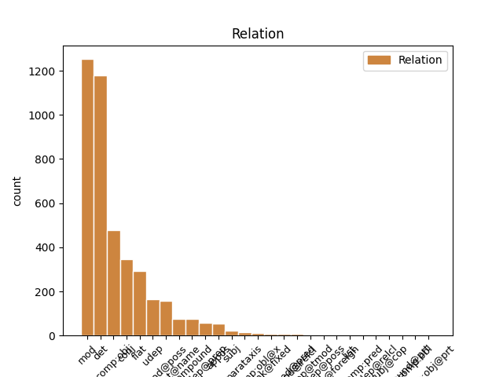
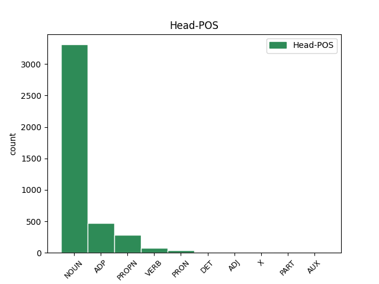
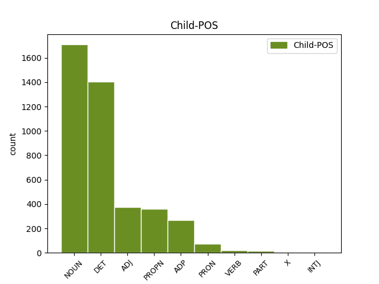

Distribution of features within this leaf



Agreement Rules sorted by frequency.
- When the dependent token is the determiner(det) of the head token, and the dependent token is DET.
1 dhá _ _ _ _ 0 _ _ _
2 chill _ _ _ _ 0 _ _ _
3 leictreacha _ _ _ _ 0 _ _ _
4 nó _ _ _ _ 0 _ _ _
5 níos _ _ _ _ 0 _ _ _
6 mó _ _ _ _ 0 _ _ _
7 a _ _ _ _ 0 _ _ _
8 tháirgeann _ _ _ _ 0 _ _ _
9 leictreachas _ _ _ _ 0 _ _ _
10 ; _ _ _ _ 0 _ _ _
11 tarlaíonn _ _ _ _ 0 _ _ _
12 sé _ _ _ _ 0 _ _ _
13 seo _ _ _ _ 0 _ _ _
14 nuair _ _ _ _ 0 _ _ _
15 a _ _ _ _ 0 _ _ _
16 imoibríonn _ _ _ _ 0 _ _ _
17 na _ _ _ _ 0 _ _ _
18 ceimiceáin _ _ _ _ 0 _ _ _
19 laistigh _ _ _ _ 0 _ _ _
20 den _ _ _ _ 0 _ _ _
21 chadhnra _ _ _ _ 0 _ _ _
22 ar _ _ _ _ 0 _ _ _
23 a _ _ _ _ 0 _ _ _
24 chéile _ _ _ _ 0 _ _ _
25 ; _ _ _ _ 0 _ _ _
26 braitheann _ _ _ _ 0 _ _ _
27 vóltas _ _ _ _ 0 _ _ _
28 cadhnra _ _ _ _ 0 _ _ _
29 ar _ _ _ _ 0 _ _ _
30 líon _ _ _ _ 0 _ _ _
31 na _ _ _ _ 0 _ _ _
32 gcill _ _ _ _ 0 _ _ _
33 a _ _ _ _ 0 _ _ _
34 bhíonn _ _ _ _ 0 _ _ _
35 ann _ _ _ _ 0 _ _ _
36 : _ _ _ _ 0 _ _ _
37 dá _ _ _ _ 0 _ _ _
38 mhéid _ _ _ _ 0 _ _ _
39 cill _ _ _ _ 0 _ _ _
40 is _ _ _ _ 0 _ _ _
41 ea _ _ _ _ 0 _ _ _
42 is _ _ _ _ 0 _ _ _
43 mó _ _ _ _ 0 _ _ _
44 an an DET Art Definite=Def|Number=Sing|PronType=Art 45 det _ _
45 vóltas vóltas NOUN Noun Gender=Masc|Number=Sing 0 _ _ _
46 carbaihiodráití _ _ _ _ 0 _ _ _
47 . _ _ _ _ 0 _ _ _
1 dhá _ _ _ _ 0 _ _ _
2 chill _ _ _ _ 0 _ _ _
3 leictreacha _ _ _ _ 0 _ _ _
4 nó _ _ _ _ 0 _ _ _
5 níos _ _ _ _ 0 _ _ _
6 mó _ _ _ _ 0 _ _ _
7 a _ _ _ _ 0 _ _ _
8 tháirgeann _ _ _ _ 0 _ _ _
9 leictreachas _ _ _ _ 0 _ _ _
10 ; _ _ _ _ 0 _ _ _
11 tarlaíonn _ _ _ _ 0 _ _ _
12 sé _ _ _ _ 0 _ _ _
13 seo _ _ _ _ 0 _ _ _
14 nuair _ _ _ _ 0 _ _ _
15 a _ _ _ _ 0 _ _ _
16 imoibríonn _ _ _ _ 0 _ _ _
17 na _ _ _ _ 0 _ _ _
18 ceimiceáin _ _ _ _ 0 _ _ _
19 laistigh _ _ _ _ 0 _ _ _
20 den _ _ _ _ 0 _ _ _
21 chadhnra _ _ _ _ 0 _ _ _
22 ar _ _ _ _ 0 _ _ _
23 a _ _ _ _ 0 _ _ _
24 chéile _ _ _ _ 0 _ _ _
25 ; _ _ _ _ 0 _ _ _
26 braitheann _ _ _ _ 0 _ _ _
27 vóltas _ _ _ _ 0 _ _ _
28 cadhnra _ _ _ _ 0 _ _ _
29 ar _ _ _ _ 0 _ _ _
30 líon _ _ _ _ 0 _ _ _
31 na _ _ _ _ 0 _ _ _
32 gcill _ _ _ _ 0 _ _ _
33 a _ _ _ _ 0 _ _ _
34 bhíonn _ _ _ _ 0 _ _ _
35 ann _ _ _ _ 0 _ _ _
36 : _ _ _ _ 0 _ _ _
37 dá _ _ _ _ 0 _ _ _
38 mhéid méid NOUN Noun Form=Len|Gender=Masc|Number=Sing 0 _ _ _
39 cill cill NOUN Noun Gender=Fem|Number=Sing 38 mod _ _
40 is _ _ _ _ 0 _ _ _
41 ea _ _ _ _ 0 _ _ _
42 is _ _ _ _ 0 _ _ _
43 mó _ _ _ _ 0 _ _ _
44 an _ _ _ _ 0 _ _ _
45 vóltas _ _ _ _ 0 _ _ _
46 carbaihiodráití _ _ _ _ 0 _ _ _
47 . _ _ _ _ 0 _ _ _
1 dhá _ _ _ _ 0 _ _ _
2 chill _ _ _ _ 0 _ _ _
3 leictreacha _ _ _ _ 0 _ _ _
4 nó _ _ _ _ 0 _ _ _
5 níos _ _ _ _ 0 _ _ _
6 mó _ _ _ _ 0 _ _ _
7 a _ _ _ _ 0 _ _ _
8 tháirgeann _ _ _ _ 0 _ _ _
9 leictreachas _ _ _ _ 0 _ _ _
10 ; _ _ _ _ 0 _ _ _
11 tarlaíonn _ _ _ _ 0 _ _ _
12 sé _ _ _ _ 0 _ _ _
13 seo _ _ _ _ 0 _ _ _
14 nuair _ _ _ _ 0 _ _ _
15 a _ _ _ _ 0 _ _ _
16 imoibríonn _ _ _ _ 0 _ _ _
17 na _ _ _ _ 0 _ _ _
18 ceimiceáin _ _ _ _ 0 _ _ _
19 laistigh _ _ _ _ 0 _ _ _
20 den de ADP Art Number=Sing|PronType=Art 0 _ _ _
21 chadhnra cadhnra NOUN Noun Form=Len|Gender=Masc|Number=Sing 20 comp:obj _ _
22 ar _ _ _ _ 0 _ _ _
23 a _ _ _ _ 0 _ _ _
24 chéile _ _ _ _ 0 _ _ _
25 ; _ _ _ _ 0 _ _ _
26 braitheann _ _ _ _ 0 _ _ _
27 vóltas _ _ _ _ 0 _ _ _
28 cadhnra _ _ _ _ 0 _ _ _
29 ar _ _ _ _ 0 _ _ _
30 líon _ _ _ _ 0 _ _ _
31 na _ _ _ _ 0 _ _ _
32 gcill _ _ _ _ 0 _ _ _
33 a _ _ _ _ 0 _ _ _
34 bhíonn _ _ _ _ 0 _ _ _
35 ann _ _ _ _ 0 _ _ _
36 : _ _ _ _ 0 _ _ _
37 dá _ _ _ _ 0 _ _ _
38 mhéid _ _ _ _ 0 _ _ _
39 cill _ _ _ _ 0 _ _ _
40 is _ _ _ _ 0 _ _ _
41 ea _ _ _ _ 0 _ _ _
42 is _ _ _ _ 0 _ _ _
43 mó _ _ _ _ 0 _ _ _
44 an _ _ _ _ 0 _ _ _
45 vóltas _ _ _ _ 0 _ _ _
46 carbaihiodráití _ _ _ _ 0 _ _ _
47 . _ _ _ _ 0 _ _ _
1 Má _ _ _ _ 0 _ _ _
2 chuirtear _ _ _ _ 0 _ _ _
3 voltas _ _ _ _ 0 _ _ _
4 íseal _ _ _ _ 0 _ _ _
5 tríd _ _ _ _ 0 _ _ _
6 an _ _ _ _ 0 _ _ _
7 ngeata _ _ _ _ 0 _ _ _
8 cuireann _ _ _ _ 0 _ _ _
9 sé _ _ _ _ 0 _ _ _
10 sruth sruth NOUN Noun Gender=Masc|Number=Sing 0 _ _ _
11 iomlán iomlán ADJ Adj Gender=Masc|Number=Sing 10 mod _ _
12 na _ _ _ _ 0 _ _ _
13 catóide _ _ _ _ 0 _ _ _
14 / _ _ _ _ 0 _ _ _
15 anóid _ _ _ _ 0 _ _ _
16 ar _ _ _ _ 0 _ _ _
17 siúl _ _ _ _ 0 _ _ _
18 agus _ _ _ _ 0 _ _ _
19 laisteálann _ _ _ _ 0 _ _ _
20 sé _ _ _ _ 0 _ _ _
21 ar _ _ _ _ 0 _ _ _
22 siúl _ _ _ _ 0 _ _ _
23 , _ _ _ _ 0 _ _ _
24 agus _ _ _ _ 0 _ _ _
25 fanann _ _ _ _ 0 _ _ _
26 sé _ _ _ _ 0 _ _ _
27 ar _ _ _ _ 0 _ _ _
28 siúl _ _ _ _ 0 _ _ _
29 go _ _ _ _ 0 _ _ _
30 fiú _ _ _ _ 0 _ _ _
31 nuair _ _ _ _ 0 _ _ _
32 a _ _ _ _ 0 _ _ _
33 bhaintear _ _ _ _ 0 _ _ _
34 voltas _ _ _ _ 0 _ _ _
35 an _ _ _ _ 0 _ _ _
36 gheata _ _ _ _ 0 _ _ _
37 . _ _ _ _ 0 _ _ _
1 Níor _ _ _ _ 0 _ _ _
2 dhearcaigh _ _ _ _ 0 _ _ _
3 Gael _ _ _ _ 0 _ _ _
4 íogaireach _ _ _ _ 0 _ _ _
5 riamh _ _ _ _ 0 _ _ _
6 ar _ _ _ _ 0 _ _ _
7 shliabh sliabh NOUN Noun Form=Len|Gender=Masc|Number=Sing 0 _ _ _
8 ná _ _ _ _ 0 _ _ _
9 ar _ _ _ _ 0 _ _ _
10 chnoc cnoc NOUN Noun Form=Len|Gender=Masc|Number=Sing 7 conj _ _
11 gan _ _ _ _ 0 _ _ _
12 smaoineamh _ _ _ _ 0 _ _ _
13 siar _ _ _ _ 0 _ _ _
14 ar _ _ _ _ 0 _ _ _
15 an _ _ _ _ 0 _ _ _
16 allóid _ _ _ _ 0 _ _ _
17 . _ _ _ _ 0 _ _ _
1 (2) _ _ _ _ 0 _ _ _
2 Is _ _ _ _ 0 _ _ _
3 é _ _ _ _ 0 _ _ _
4 méid _ _ _ _ 0 _ _ _
5 a _ _ _ _ 0 _ _ _
6 chinnfidh _ _ _ _ 0 _ _ _
7 an _ _ _ _ 0 _ _ _
8 t-údarás _ _ _ _ 0 _ _ _
9 tithíochta _ _ _ _ 0 _ _ _
10 a _ _ _ _ 0 _ _ _
11 bheidh _ _ _ _ 0 _ _ _
12 i _ _ _ _ 0 _ _ _
13 ndeontas _ _ _ _ 0 _ _ _
14 forlíontach _ _ _ _ 0 _ _ _
15 faoin _ _ _ _ 0 _ _ _
16 alt _ _ _ _ 0 _ _ _
17 seo _ _ _ _ 0 _ _ _
18 ach _ _ _ _ 0 _ _ _
19 ní _ _ _ _ 0 _ _ _
20 bheidh _ _ _ _ 0 _ _ _
21 sé _ _ _ _ 0 _ _ _
22 níos _ _ _ _ 0 _ _ _
23 mó _ _ _ _ 0 _ _ _
24 ná _ _ _ _ 0 _ _ _
25 méid _ _ _ _ 0 _ _ _
26 an _ _ _ _ 0 _ _ _
27 deontais _ _ _ _ 0 _ _ _
28 ón _ _ _ _ 0 _ _ _
29 Aire _ _ _ _ 0 _ _ _
30 ná _ _ _ _ 0 _ _ _
31 an _ _ _ _ 0 _ _ _
32 méid _ _ _ _ 0 _ _ _
33 , _ _ _ _ 0 _ _ _
34 nuair _ _ _ _ 0 _ _ _
35 a _ _ _ _ 0 _ _ _
36 chuirfear _ _ _ _ 0 _ _ _
37 é _ _ _ _ 0 _ _ _
38 sin _ _ _ _ 0 _ _ _
39 le _ _ _ _ 0 _ _ _
40 méid _ _ _ _ 0 _ _ _
41 an _ _ _ _ 0 _ _ _
42 deontais _ _ _ _ 0 _ _ _
43 ón _ _ _ _ 0 _ _ _
44 Aire _ _ _ _ 0 _ _ _
45 , _ _ _ _ 0 _ _ _
46 is _ _ _ _ 0 _ _ _
47 comhionann _ _ _ _ 0 _ _ _
48 le _ _ _ _ 0 _ _ _
49 dhá _ _ _ _ 0 _ _ _
50 thrian trian NOUN Noun Form=Len|Gender=Masc|Number=Sing 0 _ _ _
51 den de ADP Art Number=Sing|PronType=Art 50 udep _ _
52 mhéid _ _ _ _ 0 _ _ _
53 a _ _ _ _ 0 _ _ _
54 measfaidh _ _ _ _ 0 _ _ _
55 an _ _ _ _ 0 _ _ _
56 tAire _ _ _ _ 0 _ _ _
57 gurb _ _ _ _ 0 _ _ _
58 é _ _ _ _ 0 _ _ _
59 costas _ _ _ _ 0 _ _ _
60 na _ _ _ _ 0 _ _ _
61 hoibre _ _ _ _ 0 _ _ _
62 athfhoirgniúcháin _ _ _ _ 0 _ _ _
63 é _ _ _ _ 0 _ _ _
64 . _ _ _ _ 0 _ _ _
1 dhá _ _ _ _ 0 _ _ _
2 chill _ _ _ _ 0 _ _ _
3 leictreacha _ _ _ _ 0 _ _ _
4 nó _ _ _ _ 0 _ _ _
5 níos _ _ _ _ 0 _ _ _
6 mó _ _ _ _ 0 _ _ _
7 a _ _ _ _ 0 _ _ _
8 tháirgeann _ _ _ _ 0 _ _ _
9 leictreachas _ _ _ _ 0 _ _ _
10 ; _ _ _ _ 0 _ _ _
11 tarlaíonn _ _ _ _ 0 _ _ _
12 sé _ _ _ _ 0 _ _ _
13 seo _ _ _ _ 0 _ _ _
14 nuair _ _ _ _ 0 _ _ _
15 a _ _ _ _ 0 _ _ _
16 imoibríonn _ _ _ _ 0 _ _ _
17 na _ _ _ _ 0 _ _ _
18 ceimiceáin _ _ _ _ 0 _ _ _
19 laistigh _ _ _ _ 0 _ _ _
20 den _ _ _ _ 0 _ _ _
21 chadhnra _ _ _ _ 0 _ _ _
22 ar _ _ _ _ 0 _ _ _
23 a a DET Det Gender=Masc|Number=Sing|Person=3|Poss=Yes 24 mod@poss _ _
24 chéile céile NOUN Noun Form=Len|Gender=Masc|Number=Sing 0 _ _ _
25 ; _ _ _ _ 0 _ _ _
26 braitheann _ _ _ _ 0 _ _ _
27 vóltas _ _ _ _ 0 _ _ _
28 cadhnra _ _ _ _ 0 _ _ _
29 ar _ _ _ _ 0 _ _ _
30 líon _ _ _ _ 0 _ _ _
31 na _ _ _ _ 0 _ _ _
32 gcill _ _ _ _ 0 _ _ _
33 a _ _ _ _ 0 _ _ _
34 bhíonn _ _ _ _ 0 _ _ _
35 ann _ _ _ _ 0 _ _ _
36 : _ _ _ _ 0 _ _ _
37 dá _ _ _ _ 0 _ _ _
38 mhéid _ _ _ _ 0 _ _ _
39 cill _ _ _ _ 0 _ _ _
40 is _ _ _ _ 0 _ _ _
41 ea _ _ _ _ 0 _ _ _
42 is _ _ _ _ 0 _ _ _
43 mó _ _ _ _ 0 _ _ _
44 an _ _ _ _ 0 _ _ _
45 vóltas _ _ _ _ 0 _ _ _
46 carbaihiodráití _ _ _ _ 0 _ _ _
47 . _ _ _ _ 0 _ _ _
1 Tugadh _ _ _ _ 0 _ _ _
2 ag _ _ _ _ 0 _ _ _
3 Ospidéal ospidéal NOUN Noun Gender=Masc|Number=Sing 0 _ _ _
4 Bhaile _ _ _ _ 0 _ _ _
5 Lochlainn Lochlainn PROPN Noun Case=Gen|Gender=Masc|Number=Sing 3 flat _ _
6 é _ _ _ _ 0 _ _ _
7 ach _ _ _ _ 0 _ _ _
8 ní _ _ _ _ 0 _ _ _
9 fios _ _ _ _ 0 _ _ _
10 fós _ _ _ _ 0 _ _ _
11 cé _ _ _ _ 0 _ _ _
12 chomh _ _ _ _ 0 _ _ _
13 mór _ _ _ _ 0 _ _ _
14 is _ _ _ _ 0 _ _ _
15 a _ _ _ _ 0 _ _ _
16 ghortaiodh _ _ _ _ 0 _ _ _
17 é _ _ _ _ 0 _ _ _
18 . _ _ _ _ 0 _ _ _
1 Acht _ _ _ _ 0 _ _ _
2 seo _ _ _ _ 0 _ _ _
3 - _ _ _ _ 0 _ _ _
4 ciallaíonn _ _ _ _ 0 _ _ _
5 ' _ _ _ _ 0 _ _ _
6 an _ _ _ _ 0 _ _ _
7 Príomh-Acht _ _ _ _ 0 _ _ _
8 ' _ _ _ _ 0 _ _ _
9 an _ _ _ _ 0 _ _ _
10 tAcht _ _ _ _ 0 _ _ _
11 Leasa _ _ _ _ 0 _ _ _
12 Shóisialaigh _ _ _ _ 0 _ _ _
13 ( _ _ _ _ 0 _ _ _
14 Comhdhlúthú _ _ _ _ 0 _ _ _
15 ) _ _ _ _ 0 _ _ _
16 , _ _ _ _ 0 _ _ _
17 1993 _ _ _ _ 0 _ _ _
18 ; _ _ _ _ 0 _ _ _
19 ciallaíonn _ _ _ _ 0 _ _ _
20 ' _ _ _ _ 0 _ _ _
21 Acht _ _ _ _ 0 _ _ _
22 1994 _ _ _ _ 0 _ _ _
23 ' _ _ _ _ 0 _ _ _
24 an _ _ _ _ 0 _ _ _
25 tAcht acht NOUN Noun Definite=Def|Gender=Masc|Number=Sing 0 _ _ _
26 Leasa leas NOUN Noun Case=Gen|Gender=Masc|Number=Sing 25 flat _ _
27 Shóisialaigh _ _ _ _ 0 _ _ _
28 , _ _ _ _ 0 _ _ _
29 1994 _ _ _ _ 0 _ _ _
30 . _ _ _ _ 0 _ _ _
1 Na _ _ _ _ 0 _ _ _
2 Toghranna _ _ _ _ 0 _ _ _
3 Ceantair _ _ _ _ 0 _ _ _
4 seo _ _ _ _ 0 _ _ _
5 a _ _ _ _ 0 _ _ _
6 leanas _ _ _ _ 0 _ _ _
7 : _ _ _ _ 0 _ _ _
8 Baile _ _ _ _ 0 _ _ _
9 an _ _ _ _ 0 _ _ _
10 Tóchair _ _ _ _ 0 _ _ _
11 Thoir _ _ _ _ 0 _ _ _
12 , _ _ _ _ 0 _ _ _
13 Baile _ _ _ _ 0 _ _ _
14 na _ _ _ _ 0 _ _ _
15 Cille _ _ _ _ 0 _ _ _
16 , _ _ _ _ 0 _ _ _
17 Lios _ _ _ _ 0 _ _ _
18 Conaidh _ _ _ _ 0 _ _ _
19 , _ _ _ _ 0 _ _ _
20 Droim _ _ _ _ 0 _ _ _
21 Fionn _ _ _ _ 0 _ _ _
22 , _ _ _ _ 0 _ _ _
23 Baile _ _ _ _ 0 _ _ _
24 an _ _ _ _ 0 _ _ _
25 Mhóta _ _ _ _ 0 _ _ _
26 , _ _ _ _ 0 _ _ _
27 Cluain _ _ _ _ 0 _ _ _
28 Eochaille _ _ _ _ 0 _ _ _
29 , _ _ _ _ 0 _ _ _
30 Liatroim _ _ _ _ 0 _ _ _
31 , _ _ _ _ 0 _ _ _
32 Tobar _ _ _ _ 0 _ _ _
33 an _ _ _ _ 0 _ _ _
34 Choire _ _ _ _ 0 _ _ _
35 , _ _ _ _ 0 _ _ _
36 Cill _ _ _ _ 0 _ _ _
37 Toraí _ _ _ _ 0 _ _ _
38 , _ _ _ _ 0 _ _ _
39 Coill _ _ _ _ 0 _ _ _
40 Mhór _ _ _ _ 0 _ _ _
41 , _ _ _ _ 0 _ _ _
42 Cill _ _ _ _ 0 _ _ _
43 Fraoigh _ _ _ _ 0 _ _ _
44 , _ _ _ _ 0 _ _ _
45 Cúil _ _ _ _ 0 _ _ _
46 Ó _ _ _ _ 0 _ _ _
47 bhFinn _ _ _ _ 0 _ _ _
48 , _ _ _ _ 0 _ _ _
49 Cill _ _ _ _ 0 _ _ _
50 Athracht _ _ _ _ 0 _ _ _
51 , _ _ _ _ 0 _ _ _
52 Teampall _ _ _ _ 0 _ _ _
53 an _ _ _ _ 0 _ _ _
54 Mhanaigh _ _ _ _ 0 _ _ _
55 , _ _ _ _ 0 _ _ _
56 Eachineach _ _ _ _ 0 _ _ _
57 , _ _ _ _ 0 _ _ _
58 Cill _ _ _ _ 0 _ _ _
59 Mhic _ _ _ _ 0 _ _ _
60 Treana _ _ _ _ 0 _ _ _
61 , _ _ _ _ 0 _ _ _
62 Baile _ _ _ _ 0 _ _ _
63 na _ _ _ _ 0 _ _ _
64 Sí _ _ _ _ 0 _ _ _
65 , _ _ _ _ 0 _ _ _
66 Seanchua _ _ _ _ 0 _ _ _
67 , _ _ _ _ 0 _ _ _
68 Droim _ _ _ _ 0 _ _ _
69 Colm _ _ _ _ 0 _ _ _
70 , _ _ _ _ 0 _ _ _
71 Baile _ _ _ _ 0 _ _ _
72 idir _ _ _ _ 0 _ _ _
73 Dhá _ _ _ _ 0 _ _ _
74 Abhainn _ _ _ _ 0 _ _ _
75 , _ _ _ _ 0 _ _ _
76 Achadh _ _ _ _ 0 _ _ _
77 Mhór _ _ _ _ 0 _ _ _
78 , _ _ _ _ 0 _ _ _
79 Breicshliabh _ _ _ _ 0 _ _ _
80 , _ _ _ _ 0 _ _ _
81 Droim _ _ _ _ 0 _ _ _
82 Ráithe _ _ _ _ 0 _ _ _
83 , _ _ _ _ 0 _ _ _
84 Tuaim _ _ _ _ 0 _ _ _
85 Fhobhair _ _ _ _ 0 _ _ _
86 , _ _ _ _ 0 _ _ _
87 Cill _ _ _ _ 0 _ _ _
88 Sealbhaigh _ _ _ _ 0 _ _ _
89 , _ _ _ _ 0 _ _ _
90 Cill _ _ _ _ 0 _ _ _
91 Duibh _ _ _ _ 0 _ _ _
92 Dúin _ _ _ _ 0 _ _ _
93 , _ _ _ _ 0 _ _ _
94 Cill _ _ _ _ 0 _ _ _
95 Dá _ _ _ _ 0 _ _ _
96 Loch _ _ _ _ 0 _ _ _
97 , _ _ _ _ 0 _ _ _
98 Cartrún _ _ _ _ 0 _ _ _
99 , _ _ _ _ 0 _ _ _
100 Cúil _ _ _ _ 0 _ _ _
101 Áine _ _ _ _ 0 _ _ _
102 , _ _ _ _ 0 _ _ _
103 Abhainn _ _ _ _ 0 _ _ _
104 Mhór _ _ _ _ 0 _ _ _
105 , _ _ _ _ 0 _ _ _
106 An _ _ _ _ 0 _ _ _
107 Teampall teampall NOUN Noun Definite=Def|Gender=Masc|Number=Sing 0 _ _ _
108 , _ _ _ _ 0 _ _ _
109 Eanach Eanach PROPN Noun Gender=Masc|Number=Sing 107 mod _ SpaceAfter=No
110 , _ _ _ _ 0 _ _ _
111 Carraig _ _ _ _ 0 _ _ _
112 Beannchair _ _ _ _ 0 _ _ _
113 , _ _ _ _ 0 _ _ _
114 Cúil _ _ _ _ 0 _ _ _
115 Mhuine _ _ _ _ 0 _ _ _
116 agus _ _ _ _ 0 _ _ _
117 Baile _ _ _ _ 0 _ _ _
118 an _ _ _ _ 0 _ _ _
119 Tóchair _ _ _ _ 0 _ _ _
120 Thiar _ _ _ _ 0 _ _ _
121 . _ _ _ _ 0 _ _ _
1 Is _ _ _ _ 0 _ _ _
2 deacair _ _ _ _ 0 _ _ _
3 a _ _ _ _ 0 _ _ _
4 shamhlú _ _ _ _ 0 _ _ _
5 conas _ _ _ _ 0 _ _ _
6 a _ _ _ _ 0 _ _ _
7 d' _ _ _ _ 0 _ _ _
8 fhéadfadh _ _ _ _ 0 _ _ _
9 Mícheál Mícheál PROPN Noun Gender=Masc|Number=Sing 0 _ _ _
10 Ó _ _ _ _ 0 _ _ _
11 Móráin Móráin PROPN Noun Gender=Masc|Number=Sing 9 flat@name _ _
12 gníomhú _ _ _ _ 0 _ _ _
13 mar _ _ _ _ 0 _ _ _
14 thraenálaí _ _ _ _ 0 _ _ _
15 gan _ _ _ _ 0 _ _ _
16 lántacaíocht _ _ _ _ 0 _ _ _
17 ó _ _ _ _ 0 _ _ _
18 na _ _ _ _ 0 _ _ _
19 himreoirí _ _ _ _ 0 _ _ _
20 . _ _ _ _ 0 _ _ _
1 Nuair _ _ _ _ 0 _ _ _
2 nár _ _ _ _ 0 _ _ _
3 éirigh _ _ _ _ 0 _ _ _
4 leo _ _ _ _ 0 _ _ _
5 aitheantas _ _ _ _ 0 _ _ _
6 nó _ _ _ _ 0 _ _ _
7 slí slí NOUN Noun Gender=Fem|Number=Sing 0 _ _ _
8 bheatha beatha NOUN Noun Form=Len|Gender=Fem|Number=Sing 7 compound _ _
9 a _ _ _ _ 0 _ _ _
10 bhaint _ _ _ _ 0 _ _ _
11 amach _ _ _ _ 0 _ _ _
12 in _ _ _ _ 0 _ _ _
13 Albain _ _ _ _ 0 _ _ _
14 thug _ _ _ _ 0 _ _ _
15 siad _ _ _ _ 0 _ _ _
16 a _ _ _ _ 0 _ _ _
17 n-aghaidh _ _ _ _ 0 _ _ _
18 ar _ _ _ _ 0 _ _ _
19 Londain _ _ _ _ 0 _ _ _
20 . _ _ _ _ 0 _ _ _
1 Tá _ _ _ _ 0 _ _ _
2 318,000 _ _ _ _ 0 _ _ _
3 de _ _ _ _ 0 _ _ _
4 bhaill _ _ _ _ 0 _ _ _
5 ag _ _ _ _ 0 _ _ _
6 Eaglais Eaglais PROPN Noun Gender=Fem|Number=Sing 0 _ _ _
7 Phreispitéireach _ _ _ _ 0 _ _ _
8 na na DET Art Case=Gen|Definite=Def|Gender=Fem|Number=Sing|PronType=Art 6 flat _ _
9 hÉireann _ _ _ _ 0 _ _ _
10 agus _ _ _ _ 0 _ _ _
11 friothálann _ _ _ _ 0 _ _ _
12 ar _ _ _ _ 0 _ _ _
13 an _ _ _ _ 0 _ _ _
14 oileán _ _ _ _ 0 _ _ _
15 go _ _ _ _ 0 _ _ _
16 léir _ _ _ _ 0 _ _ _
17 . _ _ _ _ 0 _ _ _
1 D' _ _ _ _ 0 _ _ _
2 iarr _ _ _ _ 0 _ _ _
3 sé _ _ _ _ 0 _ _ _
4 mar _ _ _ _ 0 _ _ _
5 bhean bean NOUN Noun Form=Len|Gender=Fem|Number=Sing 0 _ _ _
6 í í PRON Pers Gender=Fem|Number=Sing|Person=3 5 mod _ _
7 ar _ _ _ _ 0 _ _ _
8 a _ _ _ _ 0 _ _ _
9 hathair _ _ _ _ 0 _ _ _
10 . _ _ _ _ 0 _ _ _
1 Na _ _ _ _ 0 _ _ _
2 Toghranna _ _ _ _ 0 _ _ _
3 Ceantair _ _ _ _ 0 _ _ _
4 seo _ _ _ _ 0 _ _ _
5 a _ _ _ _ 0 _ _ _
6 leanas _ _ _ _ 0 _ _ _
7 : _ _ _ _ 0 _ _ _
8 Baile _ _ _ _ 0 _ _ _
9 an _ _ _ _ 0 _ _ _
10 Tóchair _ _ _ _ 0 _ _ _
11 Thoir _ _ _ _ 0 _ _ _
12 , _ _ _ _ 0 _ _ _
13 Baile _ _ _ _ 0 _ _ _
14 na _ _ _ _ 0 _ _ _
15 Cille _ _ _ _ 0 _ _ _
16 , _ _ _ _ 0 _ _ _
17 Lios _ _ _ _ 0 _ _ _
18 Conaidh _ _ _ _ 0 _ _ _
19 , _ _ _ _ 0 _ _ _
20 Droim _ _ _ _ 0 _ _ _
21 Fionn _ _ _ _ 0 _ _ _
22 , _ _ _ _ 0 _ _ _
23 Baile _ _ _ _ 0 _ _ _
24 an _ _ _ _ 0 _ _ _
25 Mhóta _ _ _ _ 0 _ _ _
26 , _ _ _ _ 0 _ _ _
27 Cluain _ _ _ _ 0 _ _ _
28 Eochaille _ _ _ _ 0 _ _ _
29 , _ _ _ _ 0 _ _ _
30 Liatroim _ _ _ _ 0 _ _ _
31 , _ _ _ _ 0 _ _ _
32 Tobar _ _ _ _ 0 _ _ _
33 an _ _ _ _ 0 _ _ _
34 Choire _ _ _ _ 0 _ _ _
35 , _ _ _ _ 0 _ _ _
36 Cill _ _ _ _ 0 _ _ _
37 Toraí _ _ _ _ 0 _ _ _
38 , _ _ _ _ 0 _ _ _
39 Coill _ _ _ _ 0 _ _ _
40 Mhór _ _ _ _ 0 _ _ _
41 , _ _ _ _ 0 _ _ _
42 Cill _ _ _ _ 0 _ _ _
43 Fraoigh _ _ _ _ 0 _ _ _
44 , _ _ _ _ 0 _ _ _
45 Cúil _ _ _ _ 0 _ _ _
46 Ó _ _ _ _ 0 _ _ _
47 bhFinn _ _ _ _ 0 _ _ _
48 , _ _ _ _ 0 _ _ _
49 Cill _ _ _ _ 0 _ _ _
50 Athracht _ _ _ _ 0 _ _ _
51 , _ _ _ _ 0 _ _ _
52 Teampall _ _ _ _ 0 _ _ _
53 an _ _ _ _ 0 _ _ _
54 Mhanaigh _ _ _ _ 0 _ _ _
55 , _ _ _ _ 0 _ _ _
56 Eachineach _ _ _ _ 0 _ _ _
57 , _ _ _ _ 0 _ _ _
58 Cill _ _ _ _ 0 _ _ _
59 Mhic _ _ _ _ 0 _ _ _
60 Treana _ _ _ _ 0 _ _ _
61 , _ _ _ _ 0 _ _ _
62 Baile _ _ _ _ 0 _ _ _
63 na _ _ _ _ 0 _ _ _
64 Sí _ _ _ _ 0 _ _ _
65 , _ _ _ _ 0 _ _ _
66 Seanchua _ _ _ _ 0 _ _ _
67 , _ _ _ _ 0 _ _ _
68 Droim _ _ _ _ 0 _ _ _
69 Colm _ _ _ _ 0 _ _ _
70 , _ _ _ _ 0 _ _ _
71 Baile _ _ _ _ 0 _ _ _
72 idir _ _ _ _ 0 _ _ _
73 Dhá _ _ _ _ 0 _ _ _
74 Abhainn _ _ _ _ 0 _ _ _
75 , _ _ _ _ 0 _ _ _
76 Achadh _ _ _ _ 0 _ _ _
77 Mhór _ _ _ _ 0 _ _ _
78 , _ _ _ _ 0 _ _ _
79 Breicshliabh _ _ _ _ 0 _ _ _
80 , _ _ _ _ 0 _ _ _
81 Droim _ _ _ _ 0 _ _ _
82 Ráithe _ _ _ _ 0 _ _ _
83 , _ _ _ _ 0 _ _ _
84 Tuaim _ _ _ _ 0 _ _ _
85 Fhobhair _ _ _ _ 0 _ _ _
86 , _ _ _ _ 0 _ _ _
87 Cill _ _ _ _ 0 _ _ _
88 Sealbhaigh _ _ _ _ 0 _ _ _
89 , _ _ _ _ 0 _ _ _
90 Cill _ _ _ _ 0 _ _ _
91 Duibh _ _ _ _ 0 _ _ _
92 Dúin _ _ _ _ 0 _ _ _
93 , _ _ _ _ 0 _ _ _
94 Cill _ _ _ _ 0 _ _ _
95 Dá _ _ _ _ 0 _ _ _
96 Loch _ _ _ _ 0 _ _ _
97 , _ _ _ _ 0 _ _ _
98 Cartrún _ _ _ _ 0 _ _ _
99 , _ _ _ _ 0 _ _ _
100 Cúil _ _ _ _ 0 _ _ _
101 Áine _ _ _ _ 0 _ _ _
102 , _ _ _ _ 0 _ _ _
103 Abhainn _ _ _ _ 0 _ _ _
104 Mhór _ _ _ _ 0 _ _ _
105 , _ _ _ _ 0 _ _ _
106 An _ _ _ _ 0 _ _ _
107 Teampall _ _ _ _ 0 _ _ _
108 , _ _ _ _ 0 _ _ _
109 Eanach _ _ _ _ 0 _ _ _
110 , _ _ _ _ 0 _ _ _
111 Carraig _ _ _ _ 0 _ _ _
112 Beannchair _ _ _ _ 0 _ _ _
113 , _ _ _ _ 0 _ _ _
114 Cúil cúil NOUN Noun Gender=Fem|Number=Sing 0 _ _ _
115 Mhuine _ _ _ _ 0 _ _ _
116 agus _ _ _ _ 0 _ _ _
117 Baile Baile PROPN Noun Gender=Masc|Number=Sing 114 conj _ _
118 an _ _ _ _ 0 _ _ _
119 Tóchair _ _ _ _ 0 _ _ _
120 Thiar _ _ _ _ 0 _ _ _
121 . _ _ _ _ 0 _ _ _
1 Óir _ _ _ _ 0 _ _ _
2 tá _ _ _ _ 0 _ _ _
3 Ninì _ _ _ _ 0 _ _ _
4 ach _ _ _ _ 0 _ _ _
5 oiread _ _ _ _ 0 _ _ _
6 leis _ _ _ _ 0 _ _ _
7 an _ _ _ _ 0 _ _ _
8 lámhscríbhinn _ _ _ _ 0 _ _ _
9 imithe _ _ _ _ 0 _ _ _
10 ina _ _ _ _ 0 _ _ _
11 rian _ _ _ _ 0 _ _ _
12 ar _ _ _ _ 0 _ _ _
13 íochtar _ _ _ _ 0 _ _ _
14 mo _ _ _ _ 0 _ _ _
15 chroí _ _ _ _ 0 _ _ _
16 mar _ _ _ _ 0 _ _ _
17 a _ _ _ _ 0 _ _ _
18 bheadh _ _ _ _ 0 _ _ _
19 rud _ _ _ _ 0 _ _ _
20 éigin _ _ _ _ 0 _ _ _
21 íonghlan _ _ _ _ 0 _ _ _
22 dothuigthe _ _ _ _ 0 _ _ _
23 ann _ _ _ _ 0 _ _ _
24 , _ _ _ _ 0 _ _ _
25 rud _ _ _ _ 0 _ _ _
26 ceomhar _ _ _ _ 0 _ _ _
27 diamhair _ _ _ _ 0 _ _ _
28 mar _ _ _ _ 0 _ _ _
29 is _ _ _ _ 0 _ _ _
30 dual _ _ _ _ 0 _ _ _
31 do _ _ _ _ 0 _ _ _
32 na _ _ _ _ 0 _ _ _
33 brionglóidí _ _ _ _ 0 _ _ _
34 , _ _ _ _ 0 _ _ _
35 an _ _ _ _ 0 _ _ _
36 péire _ _ _ _ 0 _ _ _
37 acu _ _ _ _ 0 _ _ _
38 tar _ _ _ _ 0 _ _ _
39 éis _ _ _ _ 0 _ _ _
40 leá _ _ _ _ 0 _ _ _
41 ina _ _ _ _ 0 _ _ _
42 chéile _ _ _ _ 0 _ _ _
43 ina _ _ _ _ 0 _ _ _
44 n-aon _ _ _ _ 0 _ _ _
45 rian _ _ _ _ 0 _ _ _
46 amháin _ _ _ _ 0 _ _ _
47 , _ _ _ _ 0 _ _ _
48 faoi _ _ _ _ 0 _ _ _
49 mar _ _ _ _ 0 _ _ _
50 a _ _ _ _ 0 _ _ _
51 bheadh _ _ _ _ 0 _ _ _
52 Ninì _ _ _ _ 0 _ _ _
53 díscaoilte _ _ _ _ 0 _ _ _
54 agus _ _ _ _ 0 _ _ _
55 an _ _ _ _ 0 _ _ _
56 lámhscríbhinn _ _ _ _ 0 _ _ _
57 ina _ _ _ _ 0 _ _ _
58 lámha _ _ _ _ 0 _ _ _
59 aici _ _ _ _ 0 _ _ _
60 , _ _ _ _ 0 _ _ _
61 an _ _ _ _ 0 _ _ _
62 lámhscríbhinn _ _ _ _ 0 _ _ _
63 in _ _ _ _ 0 _ _ _
64 éindí _ _ _ _ 0 _ _ _
65 léi _ _ _ _ 0 _ _ _
66 , _ _ _ _ 0 _ _ _
67 ina _ _ _ _ 0 _ _ _
68 cuid cuid NOUN Noun Gender=Fem|Number=Sing 0 _ _ _
69 dhlúth _ _ _ _ 0 _ _ _
70 di do ADP Prep Gender=Fem|Number=Sing|Person=3 68 udep@prep _ SpaceAfter=No
71 , _ _ _ _ 0 _ _ _
72 í _ _ _ _ 0 _ _ _
73 aontaithe _ _ _ _ 0 _ _ _
74 ar _ _ _ _ 0 _ _ _
75 fad _ _ _ _ 0 _ _ _
76 lena _ _ _ _ 0 _ _ _
77 pearsa _ _ _ _ 0 _ _ _
78 siúd _ _ _ _ 0 _ _ _
79 . _ _ _ _ 0 _ _ _
1 Ná _ _ _ _ 0 _ _ _
2 déan _ _ _ _ 0 _ _ _
3 dearmad _ _ _ _ 0 _ _ _
4 gurb _ _ _ _ 0 _ _ _
5 é _ _ _ _ 0 _ _ _
6 John John PROPN Noun Gender=Masc|Number=Sing 0 _ _ _
7 Edwards _ _ _ _ 0 _ _ _
8 a _ _ _ _ 0 _ _ _
9 thraenálaí _ _ _ _ 0 _ _ _
10 , _ _ _ _ 0 _ _ _
11 fear fear NOUN Noun Gender=Masc|Number=Sing 6 appos _ _
12 atá _ _ _ _ 0 _ _ _
13 ina _ _ _ _ 0 _ _ _
14 shaineolaí _ _ _ _ 0 _ _ _
15 ag _ _ _ _ 0 _ _ _
16 ullmhú _ _ _ _ 0 _ _ _
17 capall _ _ _ _ 0 _ _ _
18 don _ _ _ _ 0 _ _ _
19 Cheltenham _ _ _ _ 0 _ _ _
20 Festival _ _ _ _ 0 _ _ _
21 ( _ _ _ _ 0 _ _ _
22 NH _ _ _ _ 0 _ _ _
23 ) _ _ _ _ 0 _ _ _
24 . _ _ _ _ 0 _ _ _
1 Siúlann siúlann NOUN Noun Gender=Fem|Number=Sing 0 _ _ _
2 sé _ _ _ _ 0 _ _ _
3 Éire Éire PROPN Noun Gender=Fem|Number=Sing 1 comp:obj _ _
4 á _ _ _ _ 0 _ _ _
5 lorg _ _ _ _ 0 _ _ _
6 . _ _ _ _ 0 _ _ _
1 Tá _ _ _ _ 0 _ _ _
2 318,000 _ _ _ _ 0 _ _ _
3 de _ _ _ _ 0 _ _ _
4 bhaill _ _ _ _ 0 _ _ _
5 ag _ _ _ _ 0 _ _ _
6 Eaglais Eaglais PROPN Noun Gender=Fem|Number=Sing 0 _ _ _
7 Phreispitéireach Preispitéireach ADJ Adj Gender=Fem|Number=Sing 6 flat _ _
8 na _ _ _ _ 0 _ _ _
9 hÉireann _ _ _ _ 0 _ _ _
10 agus _ _ _ _ 0 _ _ _
11 friothálann _ _ _ _ 0 _ _ _
12 ar _ _ _ _ 0 _ _ _
13 an _ _ _ _ 0 _ _ _
14 oileán _ _ _ _ 0 _ _ _
15 go _ _ _ _ 0 _ _ _
16 léir _ _ _ _ 0 _ _ _
17 . _ _ _ _ 0 _ _ _
1 Daoine _ _ _ _ 0 _ _ _
2 á do ADP Poss Number=Plur|Person=3|Poss=Yes|PronType=Prs 0 _ _ _
3 gcur _ _ _ _ 0 _ _ _
4 as _ _ _ _ 0 _ _ _
5 seilbh _ _ _ _ 0 _ _ _
6 go _ _ _ _ 0 _ _ _
7 tiubh _ _ _ _ 0 _ _ _
8 agus _ _ _ _ 0 _ _ _
9 á do ADP Poss Number=Plur|Person=3|Poss=Yes|PronType=Prs 2 conj _ _
10 gcur _ _ _ _ 0 _ _ _
11 siar _ _ _ _ 0 _ _ _
12 go _ _ _ _ 0 _ _ _
13 Connachta _ _ _ _ 0 _ _ _
14 . _ _ _ _ 0 _ _ _
1 Ní _ _ _ _ 0 _ _ _
2 aithníonn _ _ _ _ 0 _ _ _
3 aon _ _ _ _ 0 _ _ _
4 duine _ _ _ _ 0 _ _ _
5 é _ _ _ _ 0 _ _ _
6 ach _ _ _ _ 0 _ _ _
7 tá _ _ _ _ 0 _ _ _
8 a _ _ _ _ 0 _ _ _
9 fhios _ _ _ _ 0 _ _ _
10 ag _ _ _ _ 0 _ _ _
11 Áthas _ _ _ _ 0 _ _ _
12 gurb _ _ _ _ 0 _ _ _
13 é _ _ _ _ 0 _ _ _
14 Donncha Donncha PROPN Noun Gender=Masc|Number=Sing 0 _ _ _
15 ( _ _ _ _ 0 _ _ _
16 Donatus Donatus PROPN Noun Gender=Masc|Number=Sing 14 appos _ SpaceAfter=No
17 ) _ _ _ _ 0 _ _ _
18 atá _ _ _ _ 0 _ _ _
19 ann _ _ _ _ 0 _ _ _
20 . _ _ _ _ 0 _ _ _
1 Na _ _ _ _ 0 _ _ _
2 himreoirí _ _ _ _ 0 _ _ _
3 ar _ _ _ _ 0 _ _ _
4 fad _ _ _ _ 0 _ _ _
5 suite _ _ _ _ 0 _ _ _
6 istigh _ _ _ _ 0 _ _ _
7 i _ _ _ _ 0 _ _ _
8 seomra _ _ _ _ 0 _ _ _
9 feistis _ _ _ _ 0 _ _ _
10 agus _ _ _ _ 0 _ _ _
11 iad iad PRON Pers Number=Plur|Person=3 0 _ _ _
12 á do ADP Poss Number=Plur|Person=3|Poss=Yes|PronType=Prs 11 comp:obl@x _ _
13 ngléasadh _ _ _ _ 0 _ _ _
14 féin _ _ _ _ 0 _ _ _
15 don _ _ _ _ 0 _ _ _
16 chluiche _ _ _ _ 0 _ _ _
17 . _ _ _ _ 0 _ _ _
1 Tugadh _ _ _ _ 0 _ _ _
2 ag _ _ _ _ 0 _ _ _
3 Ospidéal _ _ _ _ 0 _ _ _
4 Bhaile _ _ _ _ 0 _ _ _
5 Lochlainn _ _ _ _ 0 _ _ _
6 é _ _ _ _ 0 _ _ _
7 ach _ _ _ _ 0 _ _ _
8 ní _ _ _ _ 0 _ _ _
9 fios _ _ _ _ 0 _ _ _
10 fós _ _ _ _ 0 _ _ _
11 cé _ _ _ _ 0 _ _ _
12 chomh _ _ _ _ 0 _ _ _
13 mór _ _ _ _ 0 _ _ _
14 is _ _ _ _ 0 _ _ _
15 a _ _ _ _ 0 _ _ _
16 ghortaiodh ghortaiodh NOUN Noun Gender=Masc|Number=Sing 0 _ _ _
17 é é PRON Pers Gender=Masc|Number=Sing|Person=3 16 comp:obj _ SpaceAfter=No
18 . _ _ _ _ 0 _ _ _
1 Níor _ _ _ _ 0 _ _ _
2 dhearcaigh dearcach ADJ Adj Case=Gen|Gender=Masc|Number=Sing 0 _ _ _
3 Gael gael NOUN Noun Gender=Masc|Number=Sing 2 subj _ _
4 íogaireach _ _ _ _ 0 _ _ _
5 riamh _ _ _ _ 0 _ _ _
6 ar _ _ _ _ 0 _ _ _
7 shliabh _ _ _ _ 0 _ _ _
8 ná _ _ _ _ 0 _ _ _
9 ar _ _ _ _ 0 _ _ _
10 chnoc _ _ _ _ 0 _ _ _
11 gan _ _ _ _ 0 _ _ _
12 smaoineamh _ _ _ _ 0 _ _ _
13 siar _ _ _ _ 0 _ _ _
14 ar _ _ _ _ 0 _ _ _
15 an _ _ _ _ 0 _ _ _
16 allóid _ _ _ _ 0 _ _ _
17 . _ _ _ _ 0 _ _ _
1 Déan déan VERB VTI Mood=Imp|Number=Sing|Person=2 0 _ _ _
2 amach _ _ _ _ 0 _ _ _
3 bosca _ _ _ _ 0 _ _ _
4 mar _ _ _ _ 0 _ _ _
5 seo _ _ _ _ 0 _ _ _
6 i _ _ _ _ 0 _ _ _
7 do _ _ _ _ 0 _ _ _
8 leabhar _ _ _ _ 0 _ _ _
9 agus _ _ _ _ 0 _ _ _
10 cuir cuir VERB VTI Mood=Imp|Number=Sing|Person=2 1 conj _ _
11 na _ _ _ _ 0 _ _ _
12 briathra _ _ _ _ 0 _ _ _
13 seo _ _ _ _ 0 _ _ _
14 a _ _ _ _ 0 _ _ _
15 leanas _ _ _ _ 0 _ _ _
16 sna _ _ _ _ 0 _ _ _
17 háiteanna _ _ _ _ 0 _ _ _
18 cearta _ _ _ _ 0 _ _ _
19 . _ _ _ _ 0 _ _ _
1 Bhí _ _ _ _ 0 _ _ _
2 coicís _ _ _ _ 0 _ _ _
3 ann _ _ _ _ 0 _ _ _
4 anois _ _ _ _ 0 _ _ _
5 ó _ _ _ _ 0 _ _ _
6 tháinig _ _ _ _ 0 _ _ _
7 siad _ _ _ _ 0 _ _ _
8 , _ _ _ _ 0 _ _ _
9 agus _ _ _ _ 0 _ _ _
10 dá _ _ _ _ 0 _ _ _
11 fhad _ _ _ _ 0 _ _ _
12 dá _ _ _ _ 0 _ _ _
13 mbeidís _ _ _ _ 0 _ _ _
14 ann _ _ _ _ 0 _ _ _
15 is _ _ _ _ 0 _ _ _
16 ea ea PRON Pers Number=Sing|Person=3 0 _ _ _
17 ba is PART Cmp Number=Sing|PartType=Comp 16 mod _ _
18 chontúirtí _ _ _ _ 0 _ _ _
19 dóibh _ _ _ _ 0 _ _ _
20 é _ _ _ _ 0 _ _ _
21 . _ _ _ _ 0 _ _ _
1 Bhí _ _ _ _ 0 _ _ _
2 coicís _ _ _ _ 0 _ _ _
3 ann _ _ _ _ 0 _ _ _
4 anois _ _ _ _ 0 _ _ _
5 ó _ _ _ _ 0 _ _ _
6 tháinig _ _ _ _ 0 _ _ _
7 siad _ _ _ _ 0 _ _ _
8 , _ _ _ _ 0 _ _ _
9 agus _ _ _ _ 0 _ _ _
10 dá _ _ _ _ 0 _ _ _
11 fhad _ _ _ _ 0 _ _ _
12 dá _ _ _ _ 0 _ _ _
13 mbeidís _ _ _ _ 0 _ _ _
14 ann _ _ _ _ 0 _ _ _
15 is _ _ _ _ 0 _ _ _
16 ea ea PRON Pers Number=Sing|Person=3 0 _ _ _
17 ba _ _ _ _ 0 _ _ _
18 chontúirtí _ _ _ _ 0 _ _ _
19 dóibh _ _ _ _ 0 _ _ _
20 é é PRON Pers Gender=Masc|Number=Sing|Person=3 16 subj _ SpaceAfter=No
21 . _ _ _ _ 0 _ _ _
1 Na _ _ _ _ 0 _ _ _
2 spéaclaí spéacla NOUN Noun Definite=Def|Gender=Masc|Number=Plur 0 _ _ _
3 - _ _ _ _ 0 _ _ _
4 sea _ _ _ _ 0 _ _ _
5 , _ _ _ _ 0 _ _ _
6 na _ _ _ _ 0 _ _ _
7 spéaclaí spéacla NOUN Noun Definite=Def|Gender=Masc|Number=Plur 2 parataxis _ SpaceAfter=No
8 . _ _ _ _ 0 _ _ _
1 An _ _ _ _ 0 _ _ _
2 féidir _ _ _ _ 0 _ _ _
3 leat _ _ _ _ 0 _ _ _
4 insint _ _ _ _ 0 _ _ _
5 cén cé PRON Q Number=Sing|PronType=Int 0 _ _ _
6 chaoi caoi NOUN Noun Definite=Def|Gender=Fem|Number=Sing 5 comp:pred@pred _ SpaceAfter=No
7 ? _ _ _ _ 0 _ _ _
1 Tá _ _ _ _ 0 _ _ _
2 rannta _ _ _ _ 0 _ _ _
3 agus _ _ _ _ 0 _ _ _
4 amhráin _ _ _ _ 0 _ _ _
5 ann _ _ _ _ 0 _ _ _
6 do _ _ _ _ 0 _ _ _
7 pháistí _ _ _ _ 0 _ _ _
8 in _ _ _ _ 0 _ _ _
9 a a NOUN Subst Number=Sing 0 _ _ _
10 lán lán NOUN Subst Number=Sing 9 unk@fixed _ _
11 teangacha _ _ _ _ 0 _ _ _
12 agus _ _ _ _ 0 _ _ _
13 ní _ _ _ _ 0 _ _ _
14 hiad _ _ _ _ 0 _ _ _
15 sin _ _ _ _ 0 _ _ _
16 na _ _ _ _ 0 _ _ _
17 cinn _ _ _ _ 0 _ _ _
18 atá _ _ _ _ 0 _ _ _
19 i _ _ _ _ 0 _ _ _
20 gceist _ _ _ _ 0 _ _ _
21 agam _ _ _ _ 0 _ _ _
22 anseo _ _ _ _ 0 _ _ _
23 . _ _ _ _ 0 _ _ _
1 Fear _ _ _ _ 0 _ _ _
2 gnó _ _ _ _ 0 _ _ _
3 a _ _ _ _ 0 _ _ _
4 bhí _ _ _ _ 0 _ _ _
5 ann _ _ _ _ 0 _ _ _
6 agus _ _ _ _ 0 _ _ _
7 é é PRON Pers Gender=Masc|Number=Sing|Person=3 0 _ _ _
8 pósta _ _ _ _ 0 _ _ _
9 agus _ _ _ _ 0 _ _ _
10 é é PRON Pers Gender=Masc|Number=Sing|Person=3 7 conj _ _
11 ina _ _ _ _ 0 _ _ _
12 athair _ _ _ _ 0 _ _ _
13 do _ _ _ _ 0 _ _ _
14 bheirt _ _ _ _ 0 _ _ _
15 iníon _ _ _ _ 0 _ _ _
16 . _ _ _ _ 0 _ _ _
1 Duairt _ _ _ _ 0 _ _ _
2 sé _ _ _ _ 0 _ _ _
3 agus _ _ _ _ 0 _ _ _
4 é _ _ _ _ 0 _ _ _
5 ag _ _ _ _ 0 _ _ _
6 cainnt _ _ _ _ 0 _ _ _
7 leis _ _ _ _ 0 _ _ _
8 féin _ _ _ _ 0 _ _ _
9 : _ _ _ _ 0 _ _ _
10 ' _ _ _ _ 0 _ _ _
11 Táim _ _ _ _ 0 _ _ _
12 chun _ _ _ _ 0 _ _ _
13 léitheoireacht _ _ _ _ 0 _ _ _
14 a _ _ _ _ 0 _ _ _
15 fhoghlaim _ _ _ _ 0 _ _ _
16 ar _ _ _ _ 0 _ _ _
17 scoil _ _ _ _ 0 _ _ _
18 inniu _ _ _ _ 0 _ _ _
19 ; _ _ _ _ 0 _ _ _
20 foghlamód _ _ _ _ 0 _ _ _
21 scríbhneoireacht _ _ _ _ 0 _ _ _
22 amáireach _ _ _ _ 0 _ _ _
23 , _ _ _ _ 0 _ _ _
24 agus _ _ _ _ 0 _ _ _
25 amanathar amanathar NOUN Subst Number=Sing 26 udep@tmod _ _
26 cuirfead cuir VERB VTI Number=Sing|Person=1 0 _ _ _
27 eolas _ _ _ _ 0 _ _ _
28 ar _ _ _ _ 0 _ _ _
29 uimhríocht _ _ _ _ 0 _ _ _
30 . _ _ _ _ 0 _ _ _
1 Tháinig _ _ _ _ 0 _ _ _
2 an _ _ _ _ 0 _ _ _
3 maoiniú _ _ _ _ 0 _ _ _
4 ó _ _ _ _ 0 _ _ _
5 fhoinsí _ _ _ _ 0 _ _ _
6 difriúla _ _ _ _ 0 _ _ _
7 : _ _ _ _ 0 _ _ _
8 IRP192,000 _ _ _ _ 0 _ _ _
9 ó _ _ _ _ 0 _ _ _
10 Belfast _ _ _ _ 0 _ _ _
11 Regeneration _ _ _ _ 0 _ _ _
12 Office _ _ _ _ 0 _ _ _
13 ; _ _ _ _ 0 _ _ _
14 IRP119,000 _ _ _ _ 0 _ _ _
15 ón ó ADP Art Number=Sing|PronType=Art 16 flat _ _
16 Childhood Childhood PROPN Noun Case=NomAcc|Gender=Masc|Number=Sing 0 _ _ _
17 Fund _ _ _ _ 0 _ _ _
18 ; _ _ _ _ 0 _ _ _
19 IRP60,000 _ _ _ _ 0 _ _ _
20 ó _ _ _ _ 0 _ _ _
21 Chiste _ _ _ _ 0 _ _ _
22 Síochána _ _ _ _ 0 _ _ _
23 agus _ _ _ _ 0 _ _ _
24 Athmhuintearais _ _ _ _ 0 _ _ _
25 ( _ _ _ _ 0 _ _ _
26 fríd _ _ _ _ 0 _ _ _
27 an _ _ _ _ 0 _ _ _
28 Roinn _ _ _ _ 0 _ _ _
29 Oideachais _ _ _ _ 0 _ _ _
30 ) _ _ _ _ 0 _ _ _
31 , _ _ _ _ 0 _ _ _
32 IRP70,000 _ _ _ _ 0 _ _ _
33 ó _ _ _ _ 0 _ _ _
34 Bhord _ _ _ _ 0 _ _ _
35 Oideachais _ _ _ _ 0 _ _ _
36 agus _ _ _ _ 0 _ _ _
37 Leabharlainne _ _ _ _ 0 _ _ _
38 Bhéal _ _ _ _ 0 _ _ _
39 Feirste _ _ _ _ 0 _ _ _
40 agus _ _ _ _ 0 _ _ _
41 IRP50,000 _ _ _ _ 0 _ _ _
42 ó _ _ _ _ 0 _ _ _
43 Fhoras _ _ _ _ 0 _ _ _
44 na _ _ _ _ 0 _ _ _
45 Gaeilge _ _ _ _ 0 _ _ _
46 . _ _ _ _ 0 _ _ _
1 Staonfaidh _ _ _ _ 0 _ _ _
2 an _ _ _ _ 0 _ _ _
3 Ballstát _ _ _ _ 0 _ _ _
4 i _ _ _ _ 0 _ _ _
5 dtrácht _ _ _ _ 0 _ _ _
6 , _ _ _ _ 0 _ _ _
7 de _ _ _ _ 0 _ _ _
8 mheon _ _ _ _ 0 _ _ _
9 dlúthpháirtíochta _ _ _ _ 0 _ _ _
10 frithpháirtí _ _ _ _ 0 _ _ _
11 , _ _ _ _ 0 _ _ _
12 ó _ _ _ _ 0 _ _ _
13 aon _ _ _ _ 0 _ _ _
14 ghníomhaíocht gníomhaíocht NOUN Noun Form=Len|Gender=Fem|Number=Sing 0 _ _ _
15 ar _ _ _ _ 0 _ _ _
16 dóigh dóigh VERB VTI Mood=Imp|Number=Sing|Person=2 14 mod@relcl _ _
17 di _ _ _ _ 0 _ _ _
18 bheith _ _ _ _ 0 _ _ _
19 ar _ _ _ _ 0 _ _ _
20 neamhréir _ _ _ _ 0 _ _ _
21 le _ _ _ _ 0 _ _ _
22 gníomhaíocht _ _ _ _ 0 _ _ _
23 an _ _ _ _ 0 _ _ _
24 Aontais _ _ _ _ 0 _ _ _
25 a _ _ _ _ 0 _ _ _
26 bheidh _ _ _ _ 0 _ _ _
27 bunaithe _ _ _ _ 0 _ _ _
28 ar _ _ _ _ 0 _ _ _
29 an _ _ _ _ 0 _ _ _
30 gcinneadh _ _ _ _ 0 _ _ _
31 sin _ _ _ _ 0 _ _ _
32 nó _ _ _ _ 0 _ _ _
33 gníomhaíocht _ _ _ _ 0 _ _ _
34 sin _ _ _ _ 0 _ _ _
35 an _ _ _ _ 0 _ _ _
36 Aontais _ _ _ _ 0 _ _ _
37 a _ _ _ _ 0 _ _ _
38 bhac _ _ _ _ 0 _ _ _
39 agus _ _ _ _ 0 _ _ _
40 urramóidh _ _ _ _ 0 _ _ _
41 na _ _ _ _ 0 _ _ _
42 Ballstáit _ _ _ _ 0 _ _ _
43 eile _ _ _ _ 0 _ _ _
44 a _ _ _ _ 0 _ _ _
45 sheasamh _ _ _ _ 0 _ _ _
46 . _ _ _ _ 0 _ _ _
1 Ba _ _ _ _ 0 _ _ _
2 chóir _ _ _ _ 0 _ _ _
3 go _ _ _ _ 0 _ _ _
4 gcuirfí _ _ _ _ 0 _ _ _
5 ar _ _ _ _ 0 _ _ _
6 chumas _ _ _ _ 0 _ _ _
7 an _ _ _ _ 0 _ _ _
8 pháiste _ _ _ _ 0 _ _ _
9 - _ _ _ _ 0 _ _ _
10 línte _ _ _ _ 0 _ _ _
11 fiara fiar ADJ Adj Case=NomAcc|NounType=NotSlender|Number=Plur 0 _ _ _
12 agus _ _ _ _ 0 _ _ _
13 ingearacha ingearach ADJ Adj Case=NomAcc|NounType=NotSlender|Number=Plur 11 conj _ _
14 a _ _ _ _ 0 _ _ _
15 aithint _ _ _ _ 0 _ _ _
16 agus _ _ _ _ 0 _ _ _
17 a _ _ _ _ 0 _ _ _
18 rangú _ _ _ _ 0 _ _ _
19 agus _ _ _ _ 0 _ _ _
20 cuntas _ _ _ _ 0 _ _ _
21 a _ _ _ _ 0 _ _ _
22 thabhairt _ _ _ _ 0 _ _ _
23 orthu _ _ _ _ 0 _ _ _
24 - _ _ _ _ 0 _ _ _
25 línte _ _ _ _ 0 _ _ _
26 a _ _ _ _ 0 _ _ _
27 thrasnaíonn _ _ _ _ 0 _ _ _
28 a _ _ _ _ 0 _ _ _
29 chéile _ _ _ _ 0 _ _ _
30 agus _ _ _ _ 0 _ _ _
31 a _ _ _ _ 0 _ _ _
32 n-uillinneacha _ _ _ _ 0 _ _ _
33 a _ _ _ _ 0 _ _ _
34 tharraingt _ _ _ _ 0 _ _ _
35 agus _ _ _ _ 0 _ _ _
36 a _ _ _ _ 0 _ _ _
37 phlé _ _ _ _ 0 _ _ _
38 agus _ _ _ _ 0 _ _ _
39 cur _ _ _ _ 0 _ _ _
40 síos _ _ _ _ 0 _ _ _
41 a _ _ _ _ 0 _ _ _
42 dhéanamh _ _ _ _ 0 _ _ _
43 orthu _ _ _ _ 0 _ _ _
44 . _ _ _ _ 0 _ _ _
1 dhá _ _ _ _ 0 _ _ _
2 chill cill NOUN Noun Form=Len|Gender=Fem|Number=Sing 0 _ _ _
3 leictreacha _ _ _ _ 0 _ _ _
4 nó _ _ _ _ 0 _ _ _
5 níos níos PART Cmp Number=Sing|PartType=Comp 2 conj _ _
6 mó _ _ _ _ 0 _ _ _
7 a _ _ _ _ 0 _ _ _
8 tháirgeann _ _ _ _ 0 _ _ _
9 leictreachas _ _ _ _ 0 _ _ _
10 ; _ _ _ _ 0 _ _ _
11 tarlaíonn _ _ _ _ 0 _ _ _
12 sé _ _ _ _ 0 _ _ _
13 seo _ _ _ _ 0 _ _ _
14 nuair _ _ _ _ 0 _ _ _
15 a _ _ _ _ 0 _ _ _
16 imoibríonn _ _ _ _ 0 _ _ _
17 na _ _ _ _ 0 _ _ _
18 ceimiceáin _ _ _ _ 0 _ _ _
19 laistigh _ _ _ _ 0 _ _ _
20 den _ _ _ _ 0 _ _ _
21 chadhnra _ _ _ _ 0 _ _ _
22 ar _ _ _ _ 0 _ _ _
23 a _ _ _ _ 0 _ _ _
24 chéile _ _ _ _ 0 _ _ _
25 ; _ _ _ _ 0 _ _ _
26 braitheann _ _ _ _ 0 _ _ _
27 vóltas _ _ _ _ 0 _ _ _
28 cadhnra _ _ _ _ 0 _ _ _
29 ar _ _ _ _ 0 _ _ _
30 líon _ _ _ _ 0 _ _ _
31 na _ _ _ _ 0 _ _ _
32 gcill _ _ _ _ 0 _ _ _
33 a _ _ _ _ 0 _ _ _
34 bhíonn _ _ _ _ 0 _ _ _
35 ann _ _ _ _ 0 _ _ _
36 : _ _ _ _ 0 _ _ _
37 dá _ _ _ _ 0 _ _ _
38 mhéid _ _ _ _ 0 _ _ _
39 cill _ _ _ _ 0 _ _ _
40 is _ _ _ _ 0 _ _ _
41 ea _ _ _ _ 0 _ _ _
42 is _ _ _ _ 0 _ _ _
43 mó _ _ _ _ 0 _ _ _
44 an _ _ _ _ 0 _ _ _
45 vóltas _ _ _ _ 0 _ _ _
46 carbaihiodráití _ _ _ _ 0 _ _ _
47 . _ _ _ _ 0 _ _ _
1 ' _ _ _ _ 0 _ _ _
2 Sé is AUX Cop Gender=Masc|Number=Sing|Person=3|VerbForm=Cop 0 _ _ _
3 an _ _ _ _ 0 _ _ _
4 t-iontas iontas NOUN Noun Case=NomAcc|Definite=Def|Gender=Masc|Number=Sing 2 comp:pred _ _
5 é _ _ _ _ 0 _ _ _
6 go _ _ _ _ 0 _ _ _
7 bhfuil _ _ _ _ 0 _ _ _
8 ag _ _ _ _ 0 _ _ _
9 éirí _ _ _ _ 0 _ _ _
10 chomh _ _ _ _ 0 _ _ _
11 maith _ _ _ _ 0 _ _ _
12 sin _ _ _ _ 0 _ _ _
13 le _ _ _ _ 0 _ _ _
14 múineadh _ _ _ _ 0 _ _ _
15 na _ _ _ _ 0 _ _ _
16 teanga _ _ _ _ 0 _ _ _
17 sna _ _ _ _ 0 _ _ _
18 scoileanna _ _ _ _ 0 _ _ _
19 agus _ _ _ _ 0 _ _ _
20 a _ _ _ _ 0 _ _ _
21 bhfuil _ _ _ _ 0 _ _ _
22 de _ _ _ _ 0 _ _ _
23 loitiméireacht _ _ _ _ 0 _ _ _
24 á _ _ _ _ 0 _ _ _
25 dhéanamh _ _ _ _ 0 _ _ _
26 ar _ _ _ _ 0 _ _ _
27 thoradh _ _ _ _ 0 _ _ _
28 shaothar _ _ _ _ 0 _ _ _
29 na _ _ _ _ 0 _ _ _
30 scol _ _ _ _ 0 _ _ _
31 trí _ _ _ _ 0 _ _ _
32 aineolas _ _ _ _ 0 _ _ _
33 nó _ _ _ _ 0 _ _ _
34 faillí _ _ _ _ 0 _ _ _
35 oiread _ _ _ _ 0 _ _ _
36 sin _ _ _ _ 0 _ _ _
37 daoine _ _ _ _ 0 _ _ _
38 agus _ _ _ _ 0 _ _ _
39 dreamanna _ _ _ _ 0 _ _ _
40 sa _ _ _ _ 0 _ _ _
41 tír _ _ _ _ 0 _ _ _
42 . _ _ _ _ 0 _ _ _
1 Fear fear NOUN Noun Case=NomAcc|Gender=Masc|Number=Sing 0 _ _ _
2 gnó _ _ _ _ 0 _ _ _
3 a _ _ _ _ 0 _ _ _
4 bhí _ _ _ _ 0 _ _ _
5 ann _ _ _ _ 0 _ _ _
6 agus _ _ _ _ 0 _ _ _
7 é é PRON Pers Gender=Masc|Number=Sing|Person=3 1 appos _ _
8 pósta _ _ _ _ 0 _ _ _
9 agus _ _ _ _ 0 _ _ _
10 é _ _ _ _ 0 _ _ _
11 ina _ _ _ _ 0 _ _ _
12 athair _ _ _ _ 0 _ _ _
13 do _ _ _ _ 0 _ _ _
14 bheirt _ _ _ _ 0 _ _ _
15 iníon _ _ _ _ 0 _ _ _
16 . _ _ _ _ 0 _ _ _
1 Caitheann _ _ _ _ 0 _ _ _
2 sé _ _ _ _ 0 _ _ _
3 an _ _ _ _ 0 _ _ _
4 rud _ _ _ _ 0 _ _ _
5 ar _ _ _ _ 0 _ _ _
6 fad _ _ _ _ 0 _ _ _
7 i _ _ _ _ 0 _ _ _
8 dtraipisí _ _ _ _ 0 _ _ _
9 go _ _ _ _ 0 _ _ _
10 poiblí _ _ _ _ 0 _ _ _
11 ar _ _ _ _ 0 _ _ _
12 an _ _ _ _ 0 _ _ _
13 teilifís _ _ _ _ 0 _ _ _
14 agus _ _ _ _ 0 _ _ _
15 téann _ _ _ _ 0 _ _ _
16 ar _ _ _ _ 0 _ _ _
17 a _ _ _ _ 0 _ _ _
18 theitheadh _ _ _ _ 0 _ _ _
19 sa _ _ _ _ 0 _ _ _
20 deisceart _ _ _ _ 0 _ _ _
21 (19) _ _ _ _ 0 _ _ _
22 ; _ _ _ _ 0 _ _ _
23 ar _ _ _ _ 0 _ _ _
24 a a DET Det Gender=Masc|Number=Sing|Person=3|Poss=Yes 25 subj _ _
25 choimeád coimeád NOUN Noun Form=Len|Gender=Masc|Number=Sing 0 _ _ _
26 in _ _ _ _ 0 _ _ _
27 ospidéal _ _ _ _ 0 _ _ _
28 Naomh _ _ _ _ 0 _ _ _
29 Gréagóir _ _ _ _ 0 _ _ _
30 ina _ _ _ _ 0 _ _ _
31 dhiaidh _ _ _ _ 0 _ _ _
32 sin _ _ _ _ 0 _ _ _
33 ó _ _ _ _ 0 _ _ _
34 na _ _ _ _ 0 _ _ _
35 trioblóidí _ _ _ _ 0 _ _ _
36 a _ _ _ _ 0 _ _ _
37 tharraing _ _ _ _ 0 _ _ _
38 sé _ _ _ _ 0 _ _ _
39 air _ _ _ _ 0 _ _ _
40 féin _ _ _ _ 0 _ _ _
41 (20) _ _ _ _ 0 _ _ _
42 ; _ _ _ _ 0 _ _ _
43 teitheann _ _ _ _ 0 _ _ _
44 ón _ _ _ _ 0 _ _ _
45 ospidéal _ _ _ _ 0 _ _ _
46 ina _ _ _ _ 0 _ _ _
47 dhiaidh _ _ _ _ 0 _ _ _
48 sin _ _ _ _ 0 _ _ _
49 agus _ _ _ _ 0 _ _ _
50 is _ _ _ _ 0 _ _ _
51 sa _ _ _ _ 0 _ _ _
52 bhaile _ _ _ _ 0 _ _ _
53 i _ _ _ _ 0 _ _ _
54 Nead _ _ _ _ 0 _ _ _
55 na _ _ _ _ 0 _ _ _
56 gCreabhar _ _ _ _ 0 _ _ _
57 a _ _ _ _ 0 _ _ _
58 fhágaimid _ _ _ _ 0 _ _ _
59 ag _ _ _ _ 0 _ _ _
60 deireadh _ _ _ _ 0 _ _ _
61 é _ _ _ _ 0 _ _ _
62 (21) _ _ _ _ 0 _ _ _
63 . _ _ _ _ 0 _ _ _
1 LEON Leon PROPN Noun Gender=Masc|Number=Sing 0 _ _ _
2 : _ _ _ _ 0 _ _ _
3 Féach féach VERB Imper Mood=Imp|Number=Sing|Person=2 1 parataxis _ _
4 ar _ _ _ _ 0 _ _ _
5 na _ _ _ _ 0 _ _ _
6 matáin _ _ _ _ 0 _ _ _
7 sin _ _ _ _ 0 _ _ _
8 ! _ _ _ _ 0 _ _ _
1 Tá _ _ _ _ 0 _ _ _
2 cáil _ _ _ _ 0 _ _ _
3 ar _ _ _ _ 0 _ _ _
4 an _ _ _ _ 0 _ _ _
5 leabhar _ _ _ _ 0 _ _ _
6 leis _ _ _ _ 0 _ _ _
7 an _ _ _ _ 0 _ _ _
8 Phoncánach _ _ _ _ 0 _ _ _
9 , _ _ _ _ 0 _ _ _
10 Jahn _ _ _ _ 0 _ _ _
11 Sacks _ _ _ _ 0 _ _ _
12 , _ _ _ _ 0 _ _ _
13 ar _ _ _ _ 0 _ _ _
14 The the DET Art Definite=Def|Number=Sing|PronType=Art 0 _ _ _
15 Donegal _ _ _ _ 0 _ _ _
16 Mafia Mafia PROPN Noun Case=NomAcc|Gender=Masc|Number=Sing 14 flat@foreign _ _
17 i _ _ _ _ 0 _ _ _
18 bParlaimint _ _ _ _ 0 _ _ _
19 na _ _ _ _ 0 _ _ _
20 hEorpa _ _ _ _ 0 _ _ _
21 , _ _ _ _ 0 _ _ _
22 go _ _ _ _ 0 _ _ _
23 dtí _ _ _ _ 0 _ _ _
24 an _ _ _ _ 0 _ _ _
25 lá _ _ _ _ 0 _ _ _
26 atá _ _ _ _ 0 _ _ _
27 inniu _ _ _ _ 0 _ _ _
28 ann _ _ _ _ 0 _ _ _
29 , _ _ _ _ 0 _ _ _
30 go _ _ _ _ 0 _ _ _
31 háirithe _ _ _ _ 0 _ _ _
32 i _ _ _ _ 0 _ _ _
33 measc _ _ _ _ 0 _ _ _
34 lucht _ _ _ _ 0 _ _ _
35 mion-náisiún _ _ _ _ 0 _ _ _
36 , _ _ _ _ 0 _ _ _
37 lucht _ _ _ _ 0 _ _ _
38 mionteangacha _ _ _ _ 0 _ _ _
39 agus _ _ _ _ 0 _ _ _
40 cultúir _ _ _ _ 0 _ _ _
41 ó _ _ _ _ 0 _ _ _
42 Winnie _ _ _ _ 0 _ _ _
43 Ewing _ _ _ _ 0 _ _ _
44 na _ _ _ _ 0 _ _ _
45 hAlban _ _ _ _ 0 _ _ _
46 go _ _ _ _ 0 _ _ _
47 dtí _ _ _ _ 0 _ _ _
48 an _ _ _ _ 0 _ _ _
49 Ministir _ _ _ _ 0 _ _ _
50 Protastúnach _ _ _ _ 0 _ _ _
51 / _ _ _ _ 0 _ _ _
52 Liútarach _ _ _ _ 0 _ _ _
53 de _ _ _ _ 0 _ _ _
54 chuid _ _ _ _ 0 _ _ _
55 na _ _ _ _ 0 _ _ _
56 Danmhairge _ _ _ _ 0 _ _ _
57 , _ _ _ _ 0 _ _ _
58 bean _ _ _ _ 0 _ _ _
59 a _ _ _ _ 0 _ _ _
60 bhí _ _ _ _ 0 _ _ _
61 mar _ _ _ _ 0 _ _ _
62 Leas-Uachtarán _ _ _ _ 0 _ _ _
63 ar _ _ _ _ 0 _ _ _
64 Ghrúpa _ _ _ _ 0 _ _ _
65 nach _ _ _ _ 0 _ _ _
66 raibh _ _ _ _ 0 _ _ _
67 de _ _ _ _ 0 _ _ _
68 theideal _ _ _ _ 0 _ _ _
69 acu _ _ _ _ 0 _ _ _
70 ach _ _ _ _ 0 _ _ _
71 an _ _ _ _ 0 _ _ _
72 ' _ _ _ _ 0 _ _ _
73 Technical _ _ _ _ 0 _ _ _
74 Coordination _ _ _ _ 0 _ _ _
75 Group _ _ _ _ 0 _ _ _
76 ' _ _ _ _ 0 _ _ _
77 . _ _ _ _ 0 _ _ _
1 Fearacht _ _ _ _ 0 _ _ _
2 fhilí _ _ _ _ 0 _ _ _
3 Innti _ _ _ _ 0 _ _ _
4 , _ _ _ _ 0 _ _ _
5 agus _ _ _ _ 0 _ _ _
6 go _ _ _ _ 0 _ _ _
7 mórmhór _ _ _ _ 0 _ _ _
8 Liam _ _ _ _ 0 _ _ _
9 Ó _ _ _ _ 0 _ _ _
10 Muirthile _ _ _ _ 0 _ _ _
11 a _ _ _ _ 0 _ _ _
12 bhfuil _ _ _ _ 0 _ _ _
13 an _ _ _ _ 0 _ _ _
14 ceiliúradh _ _ _ _ 0 _ _ _
15 spleodrach _ _ _ _ 0 _ _ _
16 céanna _ _ _ _ 0 _ _ _
17 ar _ _ _ _ 0 _ _ _
18 a _ _ _ _ 0 _ _ _
19 bheith _ _ _ _ 0 _ _ _
20 beo _ _ _ _ 0 _ _ _
21 ag _ _ _ _ 0 _ _ _
22 sníomh _ _ _ _ 0 _ _ _
23 trína _ _ _ _ 0 _ _ _
24 shaothar _ _ _ _ 0 _ _ _
25 agus _ _ _ _ 0 _ _ _
26 go _ _ _ _ 0 _ _ _
27 háirithe _ _ _ _ 0 _ _ _
28 trína _ _ _ _ 0 _ _ _
29 dhán _ _ _ _ 0 _ _ _
30 fada _ _ _ _ 0 _ _ _
31 ' _ _ _ _ 0 _ _ _
32 Tine _ _ _ _ 0 _ _ _
33 Chnámh _ _ _ _ 0 _ _ _
34 ' _ _ _ _ 0 _ _ _
35 ( _ _ _ _ 0 _ _ _
36 Ó _ _ _ _ 0 _ _ _
37 Muirthile _ _ _ _ 0 _ _ _
38 1984 _ _ _ _ 0 _ _ _
39 , _ _ _ _ 0 _ _ _
40 87-112 _ _ _ _ 0 _ _ _
41 ) _ _ _ _ 0 _ _ _
42 , _ _ _ _ 0 _ _ _
43 gan _ _ _ _ 0 _ _ _
44 trácht _ _ _ _ 0 _ _ _
45 ar _ _ _ _ 0 _ _ _
46 Dhuibhneach _ _ _ _ 0 _ _ _
47 eile _ _ _ _ 0 _ _ _
48 , _ _ _ _ 0 _ _ _
49 Maidhc Maidhc PROPN Noun Gender=Masc|Number=Sing 0 _ _ _
50 Dainín dainín NOUN Noun Gender=Masc|Number=Sing 49 flat@name _ _
51 Ó _ _ _ _ 0 _ _ _
52 Sé _ _ _ _ 0 _ _ _
53 , _ _ _ _ 0 _ _ _
54 go _ _ _ _ 0 _ _ _
55 mórmhór _ _ _ _ 0 _ _ _
56 ina _ _ _ _ 0 _ _ _
57 úrscéal _ _ _ _ 0 _ _ _
58 Dochtúir _ _ _ _ 0 _ _ _
59 na _ _ _ _ 0 _ _ _
60 bPiast _ _ _ _ 0 _ _ _
61 ( _ _ _ _ 0 _ _ _
62 1993 _ _ _ _ 0 _ _ _
63 ) _ _ _ _ 0 _ _ _
64 , _ _ _ _ 0 _ _ _
65 ní _ _ _ _ 0 _ _ _
66 ualach _ _ _ _ 0 _ _ _
67 ar _ _ _ _ 0 _ _ _
68 Ó _ _ _ _ 0 _ _ _
69 Cíobháin _ _ _ _ 0 _ _ _
70 ar _ _ _ _ 0 _ _ _
71 shealbhaigh _ _ _ _ 0 _ _ _
72 sé _ _ _ _ 0 _ _ _
73 de _ _ _ _ 0 _ _ _
74 thraidisiún _ _ _ _ 0 _ _ _
75 ná _ _ _ _ 0 _ _ _
76 an _ _ _ _ 0 _ _ _
77 teanga _ _ _ _ 0 _ _ _
78 a _ _ _ _ 0 _ _ _
79 d' _ _ _ _ 0 _ _ _
80 iompair _ _ _ _ 0 _ _ _
81 an _ _ _ _ 0 _ _ _
82 traidisiún _ _ _ _ 0 _ _ _
83 sin _ _ _ _ 0 _ _ _
84 . _ _ _ _ 0 _ _ _
1 Óir _ _ _ _ 0 _ _ _
2 tá _ _ _ _ 0 _ _ _
3 Ninì _ _ _ _ 0 _ _ _
4 ach _ _ _ _ 0 _ _ _
5 oiread _ _ _ _ 0 _ _ _
6 leis _ _ _ _ 0 _ _ _
7 an _ _ _ _ 0 _ _ _
8 lámhscríbhinn _ _ _ _ 0 _ _ _
9 imithe _ _ _ _ 0 _ _ _
10 ina _ _ _ _ 0 _ _ _
11 rian _ _ _ _ 0 _ _ _
12 ar _ _ _ _ 0 _ _ _
13 íochtar _ _ _ _ 0 _ _ _
14 mo _ _ _ _ 0 _ _ _
15 chroí _ _ _ _ 0 _ _ _
16 mar _ _ _ _ 0 _ _ _
17 a _ _ _ _ 0 _ _ _
18 bheadh _ _ _ _ 0 _ _ _
19 rud _ _ _ _ 0 _ _ _
20 éigin _ _ _ _ 0 _ _ _
21 íonghlan _ _ _ _ 0 _ _ _
22 dothuigthe _ _ _ _ 0 _ _ _
23 ann _ _ _ _ 0 _ _ _
24 , _ _ _ _ 0 _ _ _
25 rud _ _ _ _ 0 _ _ _
26 ceomhar _ _ _ _ 0 _ _ _
27 diamhair _ _ _ _ 0 _ _ _
28 mar _ _ _ _ 0 _ _ _
29 is _ _ _ _ 0 _ _ _
30 dual _ _ _ _ 0 _ _ _
31 do _ _ _ _ 0 _ _ _
32 na _ _ _ _ 0 _ _ _
33 brionglóidí _ _ _ _ 0 _ _ _
34 , _ _ _ _ 0 _ _ _
35 an _ _ _ _ 0 _ _ _
36 péire _ _ _ _ 0 _ _ _
37 acu _ _ _ _ 0 _ _ _
38 tar _ _ _ _ 0 _ _ _
39 éis _ _ _ _ 0 _ _ _
40 leá _ _ _ _ 0 _ _ _
41 ina _ _ _ _ 0 _ _ _
42 chéile _ _ _ _ 0 _ _ _
43 ina _ _ _ _ 0 _ _ _
44 n-aon _ _ _ _ 0 _ _ _
45 rian _ _ _ _ 0 _ _ _
46 amháin _ _ _ _ 0 _ _ _
47 , _ _ _ _ 0 _ _ _
48 faoi _ _ _ _ 0 _ _ _
49 mar _ _ _ _ 0 _ _ _
50 a _ _ _ _ 0 _ _ _
51 bheadh _ _ _ _ 0 _ _ _
52 Ninì _ _ _ _ 0 _ _ _
53 díscaoilte _ _ _ _ 0 _ _ _
54 agus _ _ _ _ 0 _ _ _
55 an _ _ _ _ 0 _ _ _
56 lámhscríbhinn _ _ _ _ 0 _ _ _
57 ina _ _ _ _ 0 _ _ _
58 lámha _ _ _ _ 0 _ _ _
59 aici _ _ _ _ 0 _ _ _
60 , _ _ _ _ 0 _ _ _
61 an _ _ _ _ 0 _ _ _
62 lámhscríbhinn _ _ _ _ 0 _ _ _
63 in _ _ _ _ 0 _ _ _
64 éindí _ _ _ _ 0 _ _ _
65 léi _ _ _ _ 0 _ _ _
66 , _ _ _ _ 0 _ _ _
67 ina i ADP Poss Gender=Fem|Number=Sing|Person=3|Poss=Yes 68 udep@poss _ _
68 cuid cuid NOUN Noun Gender=Fem|Number=Sing 0 _ _ _
69 dhlúth _ _ _ _ 0 _ _ _
70 di _ _ _ _ 0 _ _ _
71 , _ _ _ _ 0 _ _ _
72 í _ _ _ _ 0 _ _ _
73 aontaithe _ _ _ _ 0 _ _ _
74 ar _ _ _ _ 0 _ _ _
75 fad _ _ _ _ 0 _ _ _
76 lena _ _ _ _ 0 _ _ _
77 pearsa _ _ _ _ 0 _ _ _
78 siúd _ _ _ _ 0 _ _ _
79 . _ _ _ _ 0 _ _ _
1 Na _ _ _ _ 0 _ _ _
2 Toghranna _ _ _ _ 0 _ _ _
3 Ceantair _ _ _ _ 0 _ _ _
4 seo _ _ _ _ 0 _ _ _
5 a _ _ _ _ 0 _ _ _
6 leanas _ _ _ _ 0 _ _ _
7 : _ _ _ _ 0 _ _ _
8 Baile _ _ _ _ 0 _ _ _
9 an _ _ _ _ 0 _ _ _
10 Tóchair _ _ _ _ 0 _ _ _
11 Thoir _ _ _ _ 0 _ _ _
12 , _ _ _ _ 0 _ _ _
13 Baile _ _ _ _ 0 _ _ _
14 na _ _ _ _ 0 _ _ _
15 Cille _ _ _ _ 0 _ _ _
16 , _ _ _ _ 0 _ _ _
17 Lios _ _ _ _ 0 _ _ _
18 Conaidh _ _ _ _ 0 _ _ _
19 , _ _ _ _ 0 _ _ _
20 Droim _ _ _ _ 0 _ _ _
21 Fionn _ _ _ _ 0 _ _ _
22 , _ _ _ _ 0 _ _ _
23 Baile _ _ _ _ 0 _ _ _
24 an _ _ _ _ 0 _ _ _
25 Mhóta _ _ _ _ 0 _ _ _
26 , _ _ _ _ 0 _ _ _
27 Cluain _ _ _ _ 0 _ _ _
28 Eochaille _ _ _ _ 0 _ _ _
29 , _ _ _ _ 0 _ _ _
30 Liatroim _ _ _ _ 0 _ _ _
31 , _ _ _ _ 0 _ _ _
32 Tobar _ _ _ _ 0 _ _ _
33 an _ _ _ _ 0 _ _ _
34 Choire _ _ _ _ 0 _ _ _
35 , _ _ _ _ 0 _ _ _
36 Cill _ _ _ _ 0 _ _ _
37 Toraí _ _ _ _ 0 _ _ _
38 , _ _ _ _ 0 _ _ _
39 Coill _ _ _ _ 0 _ _ _
40 Mhór _ _ _ _ 0 _ _ _
41 , _ _ _ _ 0 _ _ _
42 Cill _ _ _ _ 0 _ _ _
43 Fraoigh _ _ _ _ 0 _ _ _
44 , _ _ _ _ 0 _ _ _
45 Cúil _ _ _ _ 0 _ _ _
46 Ó _ _ _ _ 0 _ _ _
47 bhFinn _ _ _ _ 0 _ _ _
48 , _ _ _ _ 0 _ _ _
49 Cill _ _ _ _ 0 _ _ _
50 Athracht _ _ _ _ 0 _ _ _
51 , _ _ _ _ 0 _ _ _
52 Teampall _ _ _ _ 0 _ _ _
53 an _ _ _ _ 0 _ _ _
54 Mhanaigh _ _ _ _ 0 _ _ _
55 , _ _ _ _ 0 _ _ _
56 Eachineach _ _ _ _ 0 _ _ _
57 , _ _ _ _ 0 _ _ _
58 Cill _ _ _ _ 0 _ _ _
59 Mhic _ _ _ _ 0 _ _ _
60 Treana _ _ _ _ 0 _ _ _
61 , _ _ _ _ 0 _ _ _
62 Baile _ _ _ _ 0 _ _ _
63 na _ _ _ _ 0 _ _ _
64 Sí _ _ _ _ 0 _ _ _
65 , _ _ _ _ 0 _ _ _
66 Seanchua _ _ _ _ 0 _ _ _
67 , _ _ _ _ 0 _ _ _
68 Droim _ _ _ _ 0 _ _ _
69 Colm _ _ _ _ 0 _ _ _
70 , _ _ _ _ 0 _ _ _
71 Baile _ _ _ _ 0 _ _ _
72 idir _ _ _ _ 0 _ _ _
73 Dhá _ _ _ _ 0 _ _ _
74 Abhainn _ _ _ _ 0 _ _ _
75 , _ _ _ _ 0 _ _ _
76 Achadh _ _ _ _ 0 _ _ _
77 Mhór _ _ _ _ 0 _ _ _
78 , _ _ _ _ 0 _ _ _
79 Breicshliabh _ _ _ _ 0 _ _ _
80 , _ _ _ _ 0 _ _ _
81 Droim _ _ _ _ 0 _ _ _
82 Ráithe _ _ _ _ 0 _ _ _
83 , _ _ _ _ 0 _ _ _
84 Tuaim _ _ _ _ 0 _ _ _
85 Fhobhair _ _ _ _ 0 _ _ _
86 , _ _ _ _ 0 _ _ _
87 Cill _ _ _ _ 0 _ _ _
88 Sealbhaigh _ _ _ _ 0 _ _ _
89 , _ _ _ _ 0 _ _ _
90 Cill _ _ _ _ 0 _ _ _
91 Duibh _ _ _ _ 0 _ _ _
92 Dúin _ _ _ _ 0 _ _ _
93 , _ _ _ _ 0 _ _ _
94 Cill _ _ _ _ 0 _ _ _
95 Dá _ _ _ _ 0 _ _ _
96 Loch _ _ _ _ 0 _ _ _
97 , _ _ _ _ 0 _ _ _
98 Cartrún _ _ _ _ 0 _ _ _
99 , _ _ _ _ 0 _ _ _
100 Cúil _ _ _ _ 0 _ _ _
101 Áine _ _ _ _ 0 _ _ _
102 , _ _ _ _ 0 _ _ _
103 Abhainn abhainn NOUN Noun Gender=Fem|Number=Sing 0 _ _ _
104 Mhór _ _ _ _ 0 _ _ _
105 , _ _ _ _ 0 _ _ _
106 An an DET Art Definite=Def|Number=Sing|PronType=Art 103 conj _ _
107 Teampall _ _ _ _ 0 _ _ _
108 , _ _ _ _ 0 _ _ _
109 Eanach _ _ _ _ 0 _ _ _
110 , _ _ _ _ 0 _ _ _
111 Carraig _ _ _ _ 0 _ _ _
112 Beannchair _ _ _ _ 0 _ _ _
113 , _ _ _ _ 0 _ _ _
114 Cúil _ _ _ _ 0 _ _ _
115 Mhuine _ _ _ _ 0 _ _ _
116 agus _ _ _ _ 0 _ _ _
117 Baile _ _ _ _ 0 _ _ _
118 an _ _ _ _ 0 _ _ _
119 Tóchair _ _ _ _ 0 _ _ _
120 Thiar _ _ _ _ 0 _ _ _
121 . _ _ _ _ 0 _ _ _
1 Trí _ _ _ _ 0 _ _ _
2 leagan leagan NOUN Noun Gender=Masc|Number=Sing 0 _ _ _
3 den _ _ _ _ 0 _ _ _
4 charr _ _ _ _ 0 _ _ _
5 nua _ _ _ _ 0 _ _ _
6 seo _ _ _ _ 0 _ _ _
7 atá _ _ _ _ 0 _ _ _
8 ar _ _ _ _ 0 _ _ _
9 an _ _ _ _ 0 _ _ _
10 margadh _ _ _ _ 0 _ _ _
11 faoi _ _ _ _ 0 _ _ _
12 láthair _ _ _ _ 0 _ _ _
13 , _ _ _ _ 0 _ _ _
14 cé _ _ _ _ 0 _ _ _
15 go _ _ _ _ 0 _ _ _
16 bhfuil _ _ _ _ 0 _ _ _
17 dhá _ _ _ _ 0 _ _ _
18 chineál _ _ _ _ 0 _ _ _
19 de _ _ _ _ 0 _ _ _
20 gach _ _ _ _ 0 _ _ _
21 ceann _ _ _ _ 0 _ _ _
22 ar _ _ _ _ 0 _ _ _
23 fáil _ _ _ _ 0 _ _ _
24 freisin _ _ _ _ 0 _ _ _
25 agus _ _ _ _ 0 _ _ _
26 an _ _ _ _ 0 _ _ _
27 praghasraon _ _ _ _ 0 _ _ _
28 ag _ _ _ _ 0 _ _ _
29 dul _ _ _ _ 0 _ _ _
30 ó _ _ _ _ 0 _ _ _
31 Euro _ _ _ _ 0 _ _ _
32 16,675 _ _ _ _ 0 _ _ _
33 go _ _ _ _ 0 _ _ _
34 dtí _ _ _ _ 0 _ _ _
35 Euro _ _ _ _ 0 _ _ _
36 19,175 _ _ _ _ 0 _ _ _
37 ( _ _ _ _ 0 _ _ _
38 ex-Corcaigh ex-Corcaigh PROPN Noun Gender=Masc|Number=Sing 2 parataxis _ SpaceAfter=No
39 ) _ _ _ _ 0 _ _ _
40 . _ _ _ _ 0 _ _ _
1 Tá _ _ _ _ 0 _ _ _
2 sé _ _ _ _ 0 _ _ _
3 fóirsteanach _ _ _ _ 0 _ _ _
4 go _ _ _ _ 0 _ _ _
5 maith _ _ _ _ 0 _ _ _
6 , _ _ _ _ 0 _ _ _
7 mar _ _ _ _ 0 _ _ _
8 sin _ _ _ _ 0 _ _ _
9 , _ _ _ _ 0 _ _ _
10 go _ _ _ _ 0 _ _ _
11 bhfuil _ _ _ _ 0 _ _ _
12 Golway _ _ _ _ 0 _ _ _
13 tar _ _ _ _ 0 _ _ _
14 éis _ _ _ _ 0 _ _ _
15 stair _ _ _ _ 0 _ _ _
16 Rannóg _ _ _ _ 0 _ _ _
17 Dóiteáin _ _ _ _ 0 _ _ _
18 Nua-Eabhrac _ _ _ _ 0 _ _ _
19 le _ _ _ _ 0 _ _ _
20 trí _ _ _ _ 0 _ _ _
21 chéad _ _ _ _ 0 _ _ _
22 bliain _ _ _ _ 0 _ _ _
23 anuas _ _ _ _ 0 _ _ _
24 a _ _ _ _ 0 _ _ _
25 scríobh _ _ _ _ 0 _ _ _
26 . _ _ _ _ 0 _ _ _
27 Tá _ _ _ _ 0 _ _ _
28 sé _ _ _ _ 0 _ _ _
29 le _ _ _ _ 0 _ _ _
30 fáil _ _ _ _ 0 _ _ _
31 ar _ _ _ _ 0 _ _ _
32 lch. _ _ _ _ 0 _ _ _
33 202-203 _ _ _ _ 0 _ _ _
34 de _ _ _ _ 0 _ _ _
35 S1067 _ _ _ _ 0 _ _ _
36 , _ _ _ _ 0 _ _ _
37 Scoil scoil NOUN Noun Case=NomAcc|Gender=Fem|Number=Sing 0 _ _ _
38 na _ _ _ _ 0 _ _ _
39 gCailíní _ _ _ _ 0 _ _ _
40 , _ _ _ _ 0 _ _ _
41 Doirí Doirí PROPN Noun Case=NomAcc|Gender=Masc|Number=Sing 37 compound _ _
42 Beaga _ _ _ _ 0 _ _ _
43 . _ _ _ _ 0 _ _ _
1 na _ _ _ _ 0 _ _ _
2 difríochtaí _ _ _ _ 0 _ _ _
3 ó _ _ _ _ 0 _ _ _
4 thaobh _ _ _ _ 0 _ _ _
5 airíonna _ _ _ _ 0 _ _ _
6 de _ _ _ _ 0 _ _ _
7 a _ _ _ _ 0 _ _ _
8 tharlaíonn _ _ _ _ 0 _ _ _
9 laistigh _ _ _ _ 0 _ _ _
10 de _ _ _ _ 0 _ _ _
11 speiceas _ _ _ _ 0 _ _ _
12 áirithe _ _ _ _ 0 _ _ _
13 ; _ _ _ _ 0 _ _ _
14 mar _ _ _ _ 0 _ _ _
15 shampla _ _ _ _ 0 _ _ _
16 , _ _ _ _ 0 _ _ _
17 bíonn _ _ _ _ 0 _ _ _
18 daoine _ _ _ _ 0 _ _ _
19 difriúil _ _ _ _ 0 _ _ _
20 ó _ _ _ _ 0 _ _ _
21 thaobh _ _ _ _ 0 _ _ _
22 dath _ _ _ _ 0 _ _ _
23 a _ _ _ _ 0 _ _ _
24 gcuid _ _ _ _ 0 _ _ _
25 gruaige _ _ _ _ 0 _ _ _
26 , _ _ _ _ 0 _ _ _
27 a _ _ _ _ 0 _ _ _
28 súl _ _ _ _ 0 _ _ _
29 agus _ _ _ _ 0 _ _ _
30 a _ _ _ _ 0 _ _ _
31 gcraicne _ _ _ _ 0 _ _ _
32 de _ _ _ _ 0 _ _ _
33 agus _ _ _ _ 0 _ _ _
34 bíonn _ _ _ _ 0 _ _ _
35 siad _ _ _ _ 0 _ _ _
36 difriúil _ _ _ _ 0 _ _ _
37 ó _ _ _ _ 0 _ _ _
38 thaobh _ _ _ _ 0 _ _ _
39 méid _ _ _ _ 0 _ _ _
40 de _ _ _ _ 0 _ _ _
41 freisin _ _ _ _ 0 _ _ _
42 athrú _ _ _ _ 0 _ _ _
43 gáis _ _ _ _ 0 _ _ _
44 go _ _ _ _ 0 _ _ _
45 leacht _ _ _ _ 0 _ _ _
46 de _ _ _ _ 0 _ _ _
47 thoradh _ _ _ _ 0 _ _ _
48 fuaraithe _ _ _ _ 0 _ _ _
49 : _ _ _ _ 0 _ _ _
50 mar _ _ _ _ 0 _ _ _
51 shampla _ _ _ _ 0 _ _ _
52 , _ _ _ _ 0 _ _ _
53 athraíonn _ _ _ _ 0 _ _ _
54 an _ _ _ _ 0 _ _ _
55 ghal _ _ _ _ 0 _ _ _
56 ó _ _ _ _ 0 _ _ _
57 chiteal _ _ _ _ 0 _ _ _
58 atá _ _ _ _ 0 _ _ _
59 ar _ _ _ _ 0 _ _ _
60 fiuchadh _ _ _ _ 0 _ _ _
61 ina _ _ _ _ 0 _ _ _
62 leacht _ _ _ _ 0 _ _ _
63 nuair _ _ _ _ 0 _ _ _
64 a _ _ _ _ 0 _ _ _
65 bhuaileann _ _ _ _ 0 _ _ _
66 sí _ _ _ _ 0 _ _ _
67 le _ _ _ _ 0 _ _ _
68 balla _ _ _ _ 0 _ _ _
69 fuar _ _ _ _ 0 _ _ _
70 cistine _ _ _ _ 0 _ _ _
71 comhthionól _ _ _ _ 0 _ _ _
72 ball _ _ _ _ 0 _ _ _
73 a _ _ _ _ 0 _ _ _
74 thiomáineann _ _ _ _ 0 _ _ _
75 fuil _ _ _ _ 0 _ _ _
76 ar _ _ _ _ 0 _ _ _
77 fud _ _ _ _ 0 _ _ _
78 an _ _ _ _ 0 _ _ _
79 choirp _ _ _ _ 0 _ _ _
80 ; _ _ _ _ 0 _ _ _
81 is _ _ _ _ 0 _ _ _
82 é _ _ _ _ 0 _ _ _
83 ráta _ _ _ _ 0 _ _ _
84 cuisle _ _ _ _ 0 _ _ _
85 duine _ _ _ _ 0 _ _ _
86 fhásta _ _ _ _ 0 _ _ _
87 ná _ _ _ _ 0 _ _ _
88 thart _ _ _ _ 0 _ _ _
89 ar _ _ _ _ 0 _ _ _
90 70 _ _ _ _ 0 _ _ _
91 buille _ _ _ _ 0 _ _ _
92 in _ _ _ _ 0 _ _ _
93 aghaidh _ _ _ _ 0 _ _ _
94 an _ _ _ _ 0 _ _ _
95 nóiméid _ _ _ _ 0 _ _ _
96 , _ _ _ _ 0 _ _ _
97 ach _ _ _ _ 0 _ _ _
98 bíonn _ _ _ _ 0 _ _ _
99 sí _ _ _ _ 0 _ _ _
100 i _ _ _ _ 0 _ _ _
101 bhfad _ _ _ _ 0 _ _ _
102 níos níos PART Cmp Number=Sing|PartType=Comp 0 _ _ _
103 tapúla tapúil ADJ Adj Case=Gen|Gender=Fem|Number=Sing 102 comp:obj@prt _ _
104 ag _ _ _ _ 0 _ _ _
105 leanbh _ _ _ _ 0 _ _ _
106 ; _ _ _ _ 0 _ _ _
107 trí _ _ _ _ 0 _ _ _
108 ghréasán _ _ _ _ 0 _ _ _
109 d' _ _ _ _ 0 _ _ _
110 fhéitheanna _ _ _ _ 0 _ _ _
111 a _ _ _ _ 0 _ _ _
112 ghluaiseann _ _ _ _ 0 _ _ _
113 an _ _ _ _ 0 _ _ _
114 fhuil _ _ _ _ 0 _ _ _
115 ; _ _ _ _ 0 _ _ _
116 fágann _ _ _ _ 0 _ _ _
117 an _ _ _ _ 0 _ _ _
118 fhuil _ _ _ _ 0 _ _ _
119 an _ _ _ _ 0 _ _ _
120 croí _ _ _ _ 0 _ _ _
121 trí _ _ _ _ 0 _ _ _
122 artairí _ _ _ _ 0 _ _ _
123 agus _ _ _ _ 0 _ _ _
124 filleann _ _ _ _ 0 _ _ _
125 sí _ _ _ _ 0 _ _ _
126 ar _ _ _ _ 0 _ _ _
127 an _ _ _ _ 0 _ _ _
128 gcroí _ _ _ _ 0 _ _ _
129 trí _ _ _ _ 0 _ _ _
130 fhéitheanna _ _ _ _ 0 _ _ _
131 achar _ _ _ _ 0 _ _ _
132 beag _ _ _ _ 0 _ _ _
133 , _ _ _ _ 0 _ _ _
134 thart _ _ _ _ 0 _ _ _
135 ar _ _ _ _ 0 _ _ _
136 mhéadar _ _ _ _ 0 _ _ _
137 cearnach _ _ _ _ 0 _ _ _
138 de _ _ _ _ 0 _ _ _
139 ghnáth _ _ _ _ 0 _ _ _
140 , _ _ _ _ 0 _ _ _
141 a _ _ _ _ 0 _ _ _
142 léiríonn _ _ _ _ 0 _ _ _
143 na _ _ _ _ 0 _ _ _
144 plandaí _ _ _ _ 0 _ _ _
145 go _ _ _ _ 0 _ _ _
146 léir _ _ _ _ 0 _ _ _
147 a _ _ _ _ 0 _ _ _
148 fhásann _ _ _ _ 0 _ _ _
149 sa _ _ _ _ 0 _ _ _
150 réimse _ _ _ _ 0 _ _ _
151 sin _ _ _ _ 0 _ _ _
152 ; _ _ _ _ 0 _ _ _
153 is _ _ _ _ 0 _ _ _
154 féidir _ _ _ _ 0 _ _ _
155 ceann _ _ _ _ 0 _ _ _
156 a _ _ _ _ 0 _ _ _
157 dhéanamh _ _ _ _ 0 _ _ _
158 as _ _ _ _ 0 _ _ _
159 píosaí _ _ _ _ 0 _ _ _
160 sreinge _ _ _ _ 0 _ _ _
161 , _ _ _ _ 0 _ _ _
162 corda _ _ _ _ 0 _ _ _
163 nó _ _ _ _ 0 _ _ _
164 adhmaid _ _ _ _ 0 _ _ _
165 an _ _ _ _ 0 _ _ _
166 ráta _ _ _ _ 0 _ _ _
167 ar _ _ _ _ 0 _ _ _
168 a _ _ _ _ 0 _ _ _
169 gcuirtear _ _ _ _ 0 _ _ _
170 obair _ _ _ _ 0 _ _ _
171 i _ _ _ _ 0 _ _ _
172 gcrích _ _ _ _ 0 _ _ _
173 , _ _ _ _ 0 _ _ _
174 is _ _ _ _ 0 _ _ _
175 é _ _ _ _ 0 _ _ _
176 sin _ _ _ _ 0 _ _ _
177 , _ _ _ _ 0 _ _ _
178 an _ _ _ _ 0 _ _ _
179 méid _ _ _ _ 0 _ _ _
180 oibre _ _ _ _ 0 _ _ _
181 a _ _ _ _ 0 _ _ _
182 dhéantar _ _ _ _ 0 _ _ _
183 in _ _ _ _ 0 _ _ _
184 aghaidh _ _ _ _ 0 _ _ _
185 an _ _ _ _ 0 _ _ _
186 tsecoind _ _ _ _ 0 _ _ _
187 ; _ _ _ _ 0 _ _ _
188 is _ _ _ _ 0 _ _ _
189 é _ _ _ _ 0 _ _ _
190 an _ _ _ _ 0 _ _ _
191 watt _ _ _ _ 0 _ _ _
192 (W) _ _ _ _ 0 _ _ _
193 an _ _ _ _ 0 _ _ _
194 t-aonad _ _ _ _ 0 _ _ _
195 cumhachta _ _ _ _ 0 _ _ _
196 rud _ _ _ _ 0 _ _ _
197 ar _ _ _ _ 0 _ _ _
198 bith _ _ _ _ 0 _ _ _
199 a _ _ _ _ 0 _ _ _
200 ghlacann _ _ _ _ 0 _ _ _
201 spás _ _ _ _ 0 _ _ _
202 agus _ _ _ _ 0 _ _ _
203 a _ _ _ _ 0 _ _ _
204 bhfuil _ _ _ _ 0 _ _ _
205 mais _ _ _ _ 0 _ _ _
206 aige _ _ _ _ 0 _ _ _
207 ; _ _ _ _ 0 _ _ _
208 is _ _ _ _ 0 _ _ _
209 féidir _ _ _ _ 0 _ _ _
210 mais _ _ _ _ 0 _ _ _
211 a _ _ _ _ 0 _ _ _
212 thabhairt _ _ _ _ 0 _ _ _
213 ar _ _ _ _ 0 _ _ _
214 gach _ _ _ _ 0 _ _ _
215 uile _ _ _ _ 0 _ _ _
216 shubstaint _ _ _ _ 0 _ _ _
217 agus _ _ _ _ 0 _ _ _
218 ábhar _ _ _ _ 0 _ _ _
219 ; _ _ _ _ 0 _ _ _
220 úsáidtear _ _ _ _ 0 _ _ _
221 na _ _ _ _ 0 _ _ _
222 téarmaí _ _ _ _ 0 _ _ _
223 solad _ _ _ _ 0 _ _ _
224 , _ _ _ _ 0 _ _ _
225 leacht _ _ _ _ 0 _ _ _
226 agus _ _ _ _ 0 _ _ _
227 gás _ _ _ _ 0 _ _ _
228 chun _ _ _ _ 0 _ _ _
229 cur _ _ _ _ 0 _ _ _
230 síos _ _ _ _ 0 _ _ _
231 ar _ _ _ _ 0 _ _ _
232 thrí _ _ _ _ 0 _ _ _
233 staid _ _ _ _ 0 _ _ _
234 ábhair _ _ _ _ 0 _ _ _
235 ; _ _ _ _ 0 _ _ _
236 is _ _ _ _ 0 _ _ _
237 féidir _ _ _ _ 0 _ _ _
238 staid _ _ _ _ 0 _ _ _
239 amháin _ _ _ _ 0 _ _ _
240 a _ _ _ _ 0 _ _ _
241 thiontú _ _ _ _ 0 _ _ _
242 go _ _ _ _ 0 _ _ _
243 staid _ _ _ _ 0 _ _ _
244 eile _ _ _ _ 0 _ _ _
245 trí _ _ _ _ 0 _ _ _
246 théamh _ _ _ _ 0 _ _ _
247 nó _ _ _ _ 0 _ _ _
248 fhuarú _ _ _ _ 0 _ _ _
249 dath _ _ _ _ 0 _ _ _
250 príomhúil _ _ _ _ 0 _ _ _
251 is _ _ _ _ 0 _ _ _
252 iad _ _ _ _ 0 _ _ _
253 dathanna _ _ _ _ 0 _ _ _
254 príomhúla _ _ _ _ 0 _ _ _
255 an _ _ _ _ 0 _ _ _
256 tsolais _ _ _ _ 0 _ _ _
257 ná _ _ _ _ 0 _ _ _
258 dearg _ _ _ _ 0 _ _ _
259 , _ _ _ _ 0 _ _ _
260 uaine _ _ _ _ 0 _ _ _
261 agus _ _ _ _ 0 _ _ _
262 gorm _ _ _ _ 0 _ _ _
263 ; _ _ _ _ 0 _ _ _
264 faightear _ _ _ _ 0 _ _ _
265 solas _ _ _ _ 0 _ _ _
266 geal _ _ _ _ 0 _ _ _
267 nuair _ _ _ _ 0 _ _ _
268 a _ _ _ _ 0 _ _ _
269 mheasctar _ _ _ _ 0 _ _ _
270 na _ _ _ _ 0 _ _ _
271 trí _ _ _ _ 0 _ _ _
272 chineál _ _ _ _ 0 _ _ _
273 le _ _ _ _ 0 _ _ _
274 chéile _ _ _ _ 0 _ _ _
275 go _ _ _ _ 0 _ _ _
276 cionchothrom _ _ _ _ 0 _ _ _
277 ; _ _ _ _ 0 _ _ _
278 nuair _ _ _ _ 0 _ _ _
279 a _ _ _ _ 0 _ _ _
280 mheasctar _ _ _ _ 0 _ _ _
281 dhá _ _ _ _ 0 _ _ _
282 dhath _ _ _ _ 0 _ _ _
283 phríomhúla _ _ _ _ 0 _ _ _
284 le _ _ _ _ 0 _ _ _
285 chéile _ _ _ _ 0 _ _ _
286 faightear _ _ _ _ 0 _ _ _
287 ceann _ _ _ _ 0 _ _ _
288 de _ _ _ _ 0 _ _ _
289 na _ _ _ _ 0 _ _ _
290 dathanna _ _ _ _ 0 _ _ _
291 tánaisteacha _ _ _ _ 0 _ _ _
292 , _ _ _ _ 0 _ _ _
293 leithéidí _ _ _ _ 0 _ _ _
294 buí _ _ _ _ 0 _ _ _
295 , _ _ _ _ 0 _ _ _
296 cian _ _ _ _ 0 _ _ _
297 agus _ _ _ _ 0 _ _ _
298 magenta _ _ _ _ 0 _ _ _
299 ; _ _ _ _ 0 _ _ _
300 is _ _ _ _ 0 _ _ _
301 iad _ _ _ _ 0 _ _ _
302 dathanna _ _ _ _ 0 _ _ _
303 príomhúla _ _ _ _ 0 _ _ _
304 péinte _ _ _ _ 0 _ _ _
305 ná _ _ _ _ 0 _ _ _
306 dearg _ _ _ _ 0 _ _ _
307 , _ _ _ _ 0 _ _ _
308 buí _ _ _ _ 0 _ _ _
309 agus _ _ _ _ 0 _ _ _
310 gorm _ _ _ _ 0 _ _ _
311 . _ _ _ _ 0 _ _ _
1 (2) _ _ _ _ 0 _ _ _
2 Déanfaidh _ _ _ _ 0 _ _ _
3 iniúchóir iniúchóir NOUN Noun Case=NomAcc|Gender=Masc|Number=Sing 0 _ _ _
4 arna ar ADP Poss Gender=Masc|Number=Sing|Person=3|Poss=Yes 3 udep@relcl _ _
5 cheapadh _ _ _ _ 0 _ _ _
6 nó _ _ _ _ 0 _ _ _
7 arna _ _ _ _ 0 _ _ _
8 ceapadh _ _ _ _ 0 _ _ _
9 faoi _ _ _ _ 0 _ _ _
10 fho-alt _ _ _ _ 0 _ _ _
11 (1) _ _ _ _ 0 _ _ _
12 tuarascáil _ _ _ _ 0 _ _ _
13 i _ _ _ _ 0 _ _ _
14 scríbhinn _ _ _ _ 0 _ _ _
15 a _ _ _ _ 0 _ _ _
16 ullmhú _ _ _ _ 0 _ _ _
17 i _ _ _ _ 0 _ _ _
18 dtaobh _ _ _ _ 0 _ _ _
19 torthaí _ _ _ _ 0 _ _ _
20 aon _ _ _ _ 0 _ _ _
21 scrúduithe _ _ _ _ 0 _ _ _
22 agus _ _ _ _ 0 _ _ _
23 imscrúduithe _ _ _ _ 0 _ _ _
24 a _ _ _ _ 0 _ _ _
25 bheidh _ _ _ _ 0 _ _ _
26 déanta _ _ _ _ 0 _ _ _
27 aige _ _ _ _ 0 _ _ _
28 nó _ _ _ _ 0 _ _ _
29 aici _ _ _ _ 0 _ _ _
30 faoin _ _ _ _ 0 _ _ _
31 alt _ _ _ _ 0 _ _ _
32 seo _ _ _ _ 0 _ _ _
33 agus _ _ _ _ 0 _ _ _
34 déanfaidh _ _ _ _ 0 _ _ _
35 sé _ _ _ _ 0 _ _ _
36 nó _ _ _ _ 0 _ _ _
37 sí _ _ _ _ 0 _ _ _
38 , _ _ _ _ 0 _ _ _
39 má _ _ _ _ 0 _ _ _
40 iarrann _ _ _ _ 0 _ _ _
41 agus _ _ _ _ 0 _ _ _
42 aon _ _ _ _ 0 _ _ _
43 uair _ _ _ _ 0 _ _ _
44 a _ _ _ _ 0 _ _ _
45 iarrann _ _ _ _ 0 _ _ _
46 an _ _ _ _ 0 _ _ _
47 tArd- _ _ _ _ 0 _ _ _
48 Reachtaire _ _ _ _ 0 _ _ _
49 amhlaidh _ _ _ _ 0 _ _ _
50 air _ _ _ _ 0 _ _ _
51 nó _ _ _ _ 0 _ _ _
52 uirthi _ _ _ _ 0 _ _ _
53 é _ _ _ _ 0 _ _ _
54 , _ _ _ _ 0 _ _ _
55 tuarascáil _ _ _ _ 0 _ _ _
56 eatramhach _ _ _ _ 0 _ _ _
57 i _ _ _ _ 0 _ _ _
58 scríbhinn _ _ _ _ 0 _ _ _
59 a _ _ _ _ 0 _ _ _
60 ullmhú _ _ _ _ 0 _ _ _
61 i _ _ _ _ 0 _ _ _
62 ndáil _ _ _ _ 0 _ _ _
63 le _ _ _ _ 0 _ _ _
64 haon _ _ _ _ 0 _ _ _
65 scrúduithe _ _ _ _ 0 _ _ _
66 agus _ _ _ _ 0 _ _ _
67 imscrúduithe _ _ _ _ 0 _ _ _
68 den _ _ _ _ 0 _ _ _
69 sórt _ _ _ _ 0 _ _ _
70 sin _ _ _ _ 0 _ _ _
71 agus _ _ _ _ 0 _ _ _
72 cuirfidh _ _ _ _ 0 _ _ _
73 sé _ _ _ _ 0 _ _ _
74 nó _ _ _ _ 0 _ _ _
75 sí _ _ _ _ 0 _ _ _
76 faoi _ _ _ _ 0 _ _ _
77 deara _ _ _ _ 0 _ _ _
78 aon _ _ _ _ 0 _ _ _
79 tuarascáil _ _ _ _ 0 _ _ _
80 den _ _ _ _ 0 _ _ _
81 sórt _ _ _ _ 0 _ _ _
82 sin _ _ _ _ 0 _ _ _
83 a _ _ _ _ 0 _ _ _
84 chur _ _ _ _ 0 _ _ _
85 ar _ _ _ _ 0 _ _ _
86 fáil _ _ _ _ 0 _ _ _
87 don _ _ _ _ 0 _ _ _
88 Ard-Reachtaire _ _ _ _ 0 _ _ _
89 . _ _ _ _ 0 _ _ _
1 Mar _ _ _ _ 0 _ _ _
2 is _ _ _ _ 0 _ _ _
3 léir _ _ _ _ 0 _ _ _
4 , _ _ _ _ 0 _ _ _
5 eisíodh _ _ _ _ 0 _ _ _
6 roinnt _ _ _ _ 0 _ _ _
7 mhaith _ _ _ _ 0 _ _ _
8 CallCards _ _ _ _ 0 _ _ _
9 ó _ _ _ _ 0 _ _ _
10 foilsíodh _ _ _ _ 0 _ _ _
11 an _ _ _ _ 0 _ _ _
12 bróisiúr _ _ _ _ 0 _ _ _
13 deireanach _ _ _ _ 0 _ _ _
14 do _ _ _ _ 0 _ _ _
15 Chlub _ _ _ _ 0 _ _ _
16 Bailitheoirí _ _ _ _ 0 _ _ _
17 CallCard _ _ _ _ 0 _ _ _
18 , _ _ _ _ 0 _ _ _
19 ina _ _ _ _ 0 _ _ _
20 measc _ _ _ _ 0 _ _ _
21 Garth _ _ _ _ 0 _ _ _
22 Brooks _ _ _ _ 0 _ _ _
23 , _ _ _ _ 0 _ _ _
24 Tia _ _ _ _ 0 _ _ _
25 Maria _ _ _ _ 0 _ _ _
26 agus _ _ _ _ 0 _ _ _
27 dhá _ _ _ _ 0 _ _ _
28 CallCard _ _ _ _ 0 _ _ _
29 do _ _ _ _ 0 _ _ _
30 Chorn _ _ _ _ 0 _ _ _
31 an _ _ _ _ 0 _ _ _
32 Domhain _ _ _ _ 0 _ _ _
33 1994 _ _ _ _ 0 _ _ _
34 i _ _ _ _ 0 _ _ _
35 S.A.M. _ _ _ _ 0 _ _ _
36 Mar _ _ _ _ 0 _ _ _
37 sin _ _ _ _ 0 _ _ _
38 , _ _ _ _ 0 _ _ _
39 cé _ _ _ _ 0 _ _ _
40 nár _ _ _ _ 0 _ _ _
41 tharraing _ _ _ _ 0 _ _ _
42 Teresa _ _ _ _ 0 _ _ _
43 ceangal _ _ _ _ 0 _ _ _
44 díreach _ _ _ _ 0 _ _ _
45 idir _ _ _ _ 0 _ _ _
46 an _ _ _ _ 0 _ _ _
47 teas _ _ _ _ 0 _ _ _
48 agus _ _ _ _ 0 _ _ _
49 an _ _ _ _ 0 _ _ _
50 chumha _ _ _ _ 0 _ _ _
51 , _ _ _ _ 0 _ _ _
52 úsáideann _ _ _ _ 0 _ _ _
53 sí _ _ _ _ 0 _ _ _
54 an _ _ _ _ 0 _ _ _
55 briathar briathar NOUN Noun Case=NomAcc|Definite=Def|Gender=Masc|Number=Sing 0 _ _ _
56 ' _ _ _ _ 0 _ _ _
57 fuaraigh fuaraigh VERB VTI Mood=Imp|Number=Sing|Person=2 55 appos _ SpaceAfter=No
58 ' _ _ _ _ 0 _ _ _
59 le _ _ _ _ 0 _ _ _
60 trácht _ _ _ _ 0 _ _ _
61 ar _ _ _ _ 0 _ _ _
62 chumha _ _ _ _ 0 _ _ _
63 a _ _ _ _ 0 _ _ _
64 bheadh _ _ _ _ 0 _ _ _
65 ag _ _ _ _ 0 _ _ _
66 trá _ _ _ _ 0 _ _ _
67 de _ _ _ _ 0 _ _ _
68 réir _ _ _ _ 0 _ _ _
69 a _ _ _ _ 0 _ _ _
70 chéile _ _ _ _ 0 _ _ _
71 , _ _ _ _ 0 _ _ _
72 i _ _ _ _ 0 _ _ _
73 ndiaidh _ _ _ _ 0 _ _ _
74 duine _ _ _ _ 0 _ _ _
75 a _ _ _ _ 0 _ _ _
76 gheobhadh _ _ _ _ 0 _ _ _
77 bás _ _ _ _ 0 _ _ _
78 . _ _ _ _ 0 _ _ _
1 Bhí _ _ _ _ 0 _ _ _
2 ráfla _ _ _ _ 0 _ _ _
3 ann _ _ _ _ 0 _ _ _
4 go _ _ _ _ 0 _ _ _
5 mb' _ _ _ _ 0 _ _ _
6 fhéidir _ _ _ _ 0 _ _ _
7 go _ _ _ _ 0 _ _ _
8 dtiocfadh _ _ _ _ 0 _ _ _
9 Pat Pat PROPN Noun Case=NomAcc|Gender=Masc|Number=Sing 0 _ _ _
10 An an DET Art Definite=Def|Number=Sing|PronType=Art 9 flat@name _ _
11 Cóp _ _ _ _ 0 _ _ _
12 Ó _ _ _ _ 0 _ _ _
13 Gallchóir _ _ _ _ 0 _ _ _
14 ar _ _ _ _ 0 _ _ _
15 ais _ _ _ _ 0 _ _ _
16 ón _ _ _ _ 0 _ _ _
17 Eoraip _ _ _ _ 0 _ _ _
18 le _ _ _ _ 0 _ _ _
19 polaitíocht _ _ _ _ 0 _ _ _
20 na _ _ _ _ 0 _ _ _
21 Dála _ _ _ _ 0 _ _ _
22 a _ _ _ _ 0 _ _ _
23 imirt _ _ _ _ 0 _ _ _
24 arís _ _ _ _ 0 _ _ _
25 . _ _ _ _ 0 _ _ _
1 Ní _ _ _ _ 0 _ _ _
2 fheadar fheadar NOUN Noun Case=NomAcc|Gender=Masc|Number=Sing 0 _ _ _
3 cén cé PRON Q Number=Sing|PronType=Int 2 det _ _
4 fáth _ _ _ _ 0 _ _ _
5 nár _ _ _ _ 0 _ _ _
6 tugadh _ _ _ _ 0 _ _ _
7 an _ _ _ _ 0 _ _ _
8 liathróid _ _ _ _ 0 _ _ _
9 do _ _ _ _ 0 _ _ _
10 na _ _ _ _ 0 _ _ _
11 cúil _ _ _ _ 0 _ _ _
12 níos _ _ _ _ 0 _ _ _
13 luaithe _ _ _ _ 0 _ _ _
14 sa _ _ _ _ 0 _ _ _
15 lae _ _ _ _ 0 _ _ _
16 nuair _ _ _ _ 0 _ _ _
17 a _ _ _ _ 0 _ _ _
18 bhí _ _ _ _ 0 _ _ _
19 sé _ _ _ _ 0 _ _ _
20 soiléir _ _ _ _ 0 _ _ _
21 go _ _ _ _ 0 _ _ _
22 raibh _ _ _ _ 0 _ _ _
23 an _ _ _ _ 0 _ _ _
24 lámh _ _ _ _ 0 _ _ _
25 in _ _ _ _ 0 _ _ _
26 uachtar _ _ _ _ 0 _ _ _
27 ag _ _ _ _ 0 _ _ _
28 tosaithe _ _ _ _ 0 _ _ _
29 na _ _ _ _ 0 _ _ _
30 Fraince _ _ _ _ 0 _ _ _
31 . _ _ _ _ 0 _ _ _
1 IS _ _ _ _ 0 _ _ _
2 É _ _ _ _ 0 _ _ _
3 IS _ _ _ _ 0 _ _ _
4 PAITRIARC patrarc NOUN Noun Case=NomAcc|Gender=Masc|Number=Sing 0 _ _ _
5 ann i ADP Prep Gender=Masc|Number=Sing|Person=3 4 comp:obl _ SpaceAfter=No
6 , _ _ _ _ 0 _ _ _
7 duine _ _ _ _ 0 _ _ _
8 ar _ _ _ _ 0 _ _ _
9 oibrigh _ _ _ _ 0 _ _ _
10 cumhacht _ _ _ _ 0 _ _ _
11 Dé _ _ _ _ 0 _ _ _
12 tríd _ _ _ _ 0 _ _ _
13 chun _ _ _ _ 0 _ _ _
14 an _ _ _ _ 0 _ _ _
15 cine _ _ _ _ 0 _ _ _
16 daonna _ _ _ _ 0 _ _ _
17 a _ _ _ _ 0 _ _ _
18 shlánú _ _ _ _ 0 _ _ _
19 , _ _ _ _ 0 _ _ _
20 duine _ _ _ _ 0 _ _ _
21 ar _ _ _ _ 0 _ _ _
22 gheall _ _ _ _ 0 _ _ _
23 Dia _ _ _ _ 0 _ _ _
24 dó _ _ _ _ 0 _ _ _
25 bheith _ _ _ _ 0 _ _ _
26 páirteach _ _ _ _ 0 _ _ _
27 in _ _ _ _ 0 _ _ _
28 obair _ _ _ _ 0 _ _ _
29 an _ _ _ _ 0 _ _ _
30 tslánaithe _ _ _ _ 0 _ _ _
31 sin _ _ _ _ 0 _ _ _
32 . _ _ _ _ 0 _ _ _
1 Bean _ _ _ _ 0 _ _ _
2 Uasal _ _ _ _ 0 _ _ _
3 : _ _ _ _ 0 _ _ _
4 Cén _ _ _ _ 0 _ _ _
5 dul dul NOUN Noun Case=NomAcc|Definite=Def|Gender=Masc|Number=Sing 0 _ _ _
6 as as ADP Prep Gender=Masc|Number=Sing|Person=3 5 compound@prt _ _
7 a _ _ _ _ 0 _ _ _
8 bhí _ _ _ _ 0 _ _ _
9 agam _ _ _ _ 0 _ _ _
10 ? _ _ _ _ 0 _ _ _
1 D' _ _ _ _ 0 _ _ _
2 iúntaigh iúntaigh NOUN Noun Case=NomAcc|Gender=Fem|Number=Sing 0 _ _ _
3 Pinocchio Pinocchio PROPN Noun Case=NomAcc|Gender=Masc|Number=Sing 2 subj _ _
4 agus _ _ _ _ 0 _ _ _
5 d' _ _ _ _ 0 _ _ _
6 fhéach _ _ _ _ 0 _ _ _
7 sé _ _ _ _ 0 _ _ _
8 air _ _ _ _ 0 _ _ _
9 . _ _ _ _ 0 _ _ _
1 Bhíodh _ _ _ _ 0 _ _ _
2 tithe teach NOUN Noun Case=NomAcc|Gender=Masc|Number=Plur 0 _ _ _
3 aitheantais _ _ _ _ 0 _ _ _
4 acu ag ADP Prep Number=Plur|Person=3 2 compound _ _
5 ag _ _ _ _ 0 _ _ _
6 gabháil _ _ _ _ 0 _ _ _
7 ann _ _ _ _ 0 _ _ _
8 , _ _ _ _ 0 _ _ _
9 ag _ _ _ _ 0 _ _ _
10 teacht _ _ _ _ 0 _ _ _
11 ar _ _ _ _ 0 _ _ _
12 ais _ _ _ _ 0 _ _ _
13 agus _ _ _ _ 0 _ _ _
14 ag _ _ _ _ 0 _ _ _
15 ceann _ _ _ _ 0 _ _ _
16 scríbe _ _ _ _ 0 _ _ _
17 . _ _ _ _ 0 _ _ _
1 Ná _ _ _ _ 0 _ _ _
2 dein dein X CM Dialect=Munster|Mood=Imp|Number=Sing|Person=2|Polarity=Neg 0 _ _ _
3 so _ _ _ _ 0 _ _ _
4 agus _ _ _ _ 0 _ _ _
5 ná _ _ _ _ 0 _ _ _
6 dein dein X CM Dialect=Munster|Mood=Imp|Number=Sing|Person=2|Polarity=Neg 2 conj _ _
7 súd _ _ _ _ 0 _ _ _
8 . _ _ _ _ 0 _ _ _
1 (4) _ _ _ _ 0 _ _ _
2 Breithneoidh _ _ _ _ 0 _ _ _
3 an _ _ _ _ 0 _ _ _
4 Ard-Chomhairle _ _ _ _ 0 _ _ _
5 gach _ _ _ _ 0 _ _ _
6 aithris _ _ _ _ 0 _ _ _
7 chúise _ _ _ _ 0 _ _ _
8 agus _ _ _ _ 0 _ _ _
9 na _ _ _ _ 0 _ _ _
10 nótaí _ _ _ _ 0 _ _ _
11 ( _ _ _ _ 0 _ _ _
12 más _ _ _ _ 0 _ _ _
13 ann _ _ _ _ 0 _ _ _
14 dóibh _ _ _ _ 0 _ _ _
15 ) _ _ _ _ 0 _ _ _
16 ina _ _ _ _ 0 _ _ _
17 taobh _ _ _ _ 0 _ _ _
18 a _ _ _ _ 0 _ _ _
19 leagfar _ _ _ _ 0 _ _ _
20 fé _ _ _ _ 0 _ _ _
21 n-a _ _ _ _ 0 _ _ _
22 bráid _ _ _ _ 0 _ _ _
23 fén _ _ _ _ 0 _ _ _
24 alt _ _ _ _ 0 _ _ _
25 so _ _ _ _ 0 _ _ _
26 agus _ _ _ _ 0 _ _ _
27 más _ _ _ _ 0 _ _ _
28 deimhin _ _ _ _ 0 _ _ _
29 léi _ _ _ _ 0 _ _ _
30 tar _ _ _ _ 0 _ _ _
31 éis _ _ _ _ 0 _ _ _
32 an _ _ _ _ 0 _ _ _
33 bhreithnithe _ _ _ _ 0 _ _ _
34 sin _ _ _ _ 0 _ _ _
35 go _ _ _ _ 0 _ _ _
36 bhfuil _ _ _ _ 0 _ _ _
37 an _ _ _ _ 0 _ _ _
38 cúrsa _ _ _ _ 0 _ _ _
39 stuidéir _ _ _ _ 0 _ _ _
40 agus _ _ _ _ 0 _ _ _
41 na _ _ _ _ 0 _ _ _
42 scrúduithe _ _ _ _ 0 _ _ _
43 le _ _ _ _ 0 _ _ _
44 n-a _ _ _ _ 0 _ _ _
45 mbaineann _ _ _ _ 0 _ _ _
46 an _ _ _ _ 0 _ _ _
47 aithris _ _ _ _ 0 _ _ _
48 chúise _ _ _ _ 0 _ _ _
49 sin _ _ _ _ 0 _ _ _
50 gan _ _ _ _ 0 _ _ _
51 bheith _ _ _ _ 0 _ _ _
52 de _ _ _ _ 0 _ _ _
53 shaghas _ _ _ _ 0 _ _ _
54 a _ _ _ _ 0 _ _ _
55 chuireann _ _ _ _ 0 _ _ _
56 in _ _ _ _ 0 _ _ _
57 áirithe _ _ _ _ 0 _ _ _
58 go _ _ _ _ 0 _ _ _
59 mbeidh _ _ _ _ 0 _ _ _
60 ag _ _ _ _ 0 _ _ _
61 daoine _ _ _ _ 0 _ _ _
62 , _ _ _ _ 0 _ _ _
63 a _ _ _ _ 0 _ _ _
64 gheobhaidh _ _ _ _ 0 _ _ _
65 teisteas _ _ _ _ 0 _ _ _
66 tástála _ _ _ _ 0 _ _ _
67 ón _ _ _ _ 0 _ _ _
68 gcoláiste _ _ _ _ 0 _ _ _
69 no _ _ _ _ 0 _ _ _
70 ón _ _ _ _ 0 _ _ _
71 gcólucht gcólucht NOUN Noun Case=NomAcc|Gender=Masc|Number=Sing 0 _ _ _
72 a _ _ _ _ 0 _ _ _
73 cheangalann cheangalann NOUN Noun Case=NomAcc|Gender=Fem|Number=Sing 71 mod@relcl _ _
74 ar _ _ _ _ 0 _ _ _
75 dhaoine _ _ _ _ 0 _ _ _
76 an _ _ _ _ 0 _ _ _
77 cúrsa _ _ _ _ 0 _ _ _
78 stuidéir _ _ _ _ 0 _ _ _
79 agus _ _ _ _ 0 _ _ _
80 na _ _ _ _ 0 _ _ _
81 scrúduithe _ _ _ _ 0 _ _ _
82 sin _ _ _ _ 0 _ _ _
83 do _ _ _ _ 0 _ _ _
84 chur _ _ _ _ 0 _ _ _
85 díobh _ _ _ _ 0 _ _ _
86 , _ _ _ _ 0 _ _ _
87 an _ _ _ _ 0 _ _ _
88 oilteacht _ _ _ _ 0 _ _ _
89 agus _ _ _ _ 0 _ _ _
90 an _ _ _ _ 0 _ _ _
91 t-eolas _ _ _ _ 0 _ _ _
92 is _ _ _ _ 0 _ _ _
93 gá _ _ _ _ 0 _ _ _
94 chun _ _ _ _ 0 _ _ _
95 a _ _ _ _ 0 _ _ _
96 ngairm _ _ _ _ 0 _ _ _
97 do _ _ _ _ 0 _ _ _
98 chleachta _ _ _ _ 0 _ _ _
99 go _ _ _ _ 0 _ _ _
100 héifeachtúil _ _ _ _ 0 _ _ _
101 , _ _ _ _ 0 _ _ _
102 féadfidh _ _ _ _ 0 _ _ _
103 an _ _ _ _ 0 _ _ _
104 Ard-Chomhairle _ _ _ _ 0 _ _ _
105 , _ _ _ _ 0 _ _ _
106 le _ _ _ _ 0 _ _ _
107 hordú _ _ _ _ 0 _ _ _
108 , _ _ _ _ 0 _ _ _
109 a _ _ _ _ 0 _ _ _
110 fhaisnéis _ _ _ _ 0 _ _ _
111 ná _ _ _ _ 0 _ _ _
112 déanfidh _ _ _ _ 0 _ _ _
113 aon _ _ _ _ 0 _ _ _
114 teisteas _ _ _ _ 0 _ _ _
115 tástála _ _ _ _ 0 _ _ _
116 a _ _ _ _ 0 _ _ _
117 dheonfidh _ _ _ _ 0 _ _ _
118 an _ _ _ _ 0 _ _ _
119 coláiste _ _ _ _ 0 _ _ _
120 no _ _ _ _ 0 _ _ _
121 an _ _ _ _ 0 _ _ _
122 cólucht _ _ _ _ 0 _ _ _
123 san _ _ _ _ 0 _ _ _
124 d' _ _ _ _ 0 _ _ _
125 éinne _ _ _ _ 0 _ _ _
126 ar _ _ _ _ 0 _ _ _
127 an _ _ _ _ 0 _ _ _
128 dáta _ _ _ _ 0 _ _ _
129 no _ _ _ _ 0 _ _ _
130 tar _ _ _ _ 0 _ _ _
131 éis _ _ _ _ 0 _ _ _
132 an _ _ _ _ 0 _ _ _
133 dáta _ _ _ _ 0 _ _ _
134 a _ _ _ _ 0 _ _ _
135 luadhfar _ _ _ _ 0 _ _ _
136 chuige _ _ _ _ 0 _ _ _
137 sin _ _ _ _ 0 _ _ _
138 san _ _ _ _ 0 _ _ _
139 ordú _ _ _ _ 0 _ _ _
140 san _ _ _ _ 0 _ _ _
141 ceart _ _ _ _ 0 _ _ _
142 chun _ _ _ _ 0 _ _ _
143 a _ _ _ _ 0 _ _ _
144 chláruithe _ _ _ _ 0 _ _ _
145 sa _ _ _ _ 0 _ _ _
146 chlár _ _ _ _ 0 _ _ _
147 do _ _ _ _ 0 _ _ _
148 bhronna _ _ _ _ 0 _ _ _
149 ar _ _ _ _ 0 _ _ _
150 an _ _ _ _ 0 _ _ _
151 duine _ _ _ _ 0 _ _ _
152 sin _ _ _ _ 0 _ _ _
153 . _ _ _ _ 0 _ _ _
1 ' _ _ _ _ 0 _ _ _
2 Go _ _ _ _ 0 _ _ _
3 cnáimh _ _ _ _ 0 _ _ _
4 i _ _ _ _ 0 _ _ _
5 mbodach bodach NOUN Noun Case=NomAcc|Form=Ecl|Gender=Masc|Number=Sing 0 _ _ _
6 an an DET Art Definite=Def|Number=Sing|PronType=Art 5 unk@fixed _ _
7 chóta _ _ _ _ 0 _ _ _
8 lachtna _ _ _ _ 0 _ _ _
9 , _ _ _ _ 0 _ _ _
10 ' _ _ _ _ 0 _ _ _
11 a _ _ _ _ 0 _ _ _
12 deirimse _ _ _ _ 0 _ _ _
13 . _ _ _ _ 0 _ _ _
1 I _ _ _ _ 0 _ _ _
2 ndiaidh _ _ _ _ 0 _ _ _
3 na _ _ _ _ 0 _ _ _
4 Nollag _ _ _ _ 0 _ _ _
5 , _ _ _ _ 0 _ _ _
6 shínigh _ _ _ _ 0 _ _ _
7 Gobharnóir _ _ _ _ 0 _ _ _
8 an _ _ _ _ 0 _ _ _
9 phríosúin _ _ _ _ 0 _ _ _
10 cáipéis _ _ _ _ 0 _ _ _
11 inar _ _ _ _ 0 _ _ _
12 dhúirt _ _ _ _ 0 _ _ _
13 sé _ _ _ _ 0 _ _ _
14 go _ _ _ _ 0 _ _ _
15 raibh _ _ _ _ 0 _ _ _
16 sé _ _ _ _ 0 _ _ _
17 sásta _ _ _ _ 0 _ _ _
18 go _ _ _ _ 0 _ _ _
19 raibh _ _ _ _ 0 _ _ _
20 Béarla _ _ _ _ 0 _ _ _
21 acu _ _ _ _ 0 _ _ _
22 beirt _ _ _ _ 0 _ _ _
23 agus _ _ _ _ 0 _ _ _
24 nach _ _ _ _ 0 _ _ _
25 mbeadh _ _ _ _ 0 _ _ _
26 cead _ _ _ _ 0 _ _ _
27 acu _ _ _ _ 0 _ _ _
28 Gaeilge _ _ _ _ 0 _ _ _
29 a _ _ _ _ 0 _ _ _
30 labhairt _ _ _ _ 0 _ _ _
31 ní ní NOUN Subst Number=Sing|PartType=Comp 0 _ _ _
32 ba ba PART Sup Number=Sing|PartType=Comp 31 unk@fixed _ _
33 mhó _ _ _ _ 0 _ _ _
34 . _ _ _ _ 0 _ _ _
1 I _ _ _ _ 0 _ _ _
2 dtaca _ _ _ _ 0 _ _ _
3 le _ _ _ _ 0 _ _ _
4 Boird _ _ _ _ 0 _ _ _
5 Sláinte _ _ _ _ 0 _ _ _
6 de _ _ _ _ 0 _ _ _
7 , _ _ _ _ 0 _ _ _
8 déanann _ _ _ _ 0 _ _ _
9 an _ _ _ _ 0 _ _ _
10 tOrdú _ _ _ _ 0 _ _ _
11 Rialtais _ _ _ _ 0 _ _ _
12 an _ _ _ _ 0 _ _ _
13 méid _ _ _ _ 0 _ _ _
14 seo _ _ _ _ 0 _ _ _
15 a _ _ _ _ 0 _ _ _
16 leanas _ _ _ _ 0 _ _ _
17 a _ _ _ _ 0 _ _ _
18 eisiamh _ _ _ _ 0 _ _ _
19 ó _ _ _ _ 0 _ _ _
20 réim _ _ _ _ 0 _ _ _
21 an _ _ _ _ 0 _ _ _
22 Ombudsman _ _ _ _ 0 _ _ _
23 : _ _ _ _ 0 _ _ _
24 a) _ _ _ _ 0 _ _ _
25 daoine _ _ _ _ 0 _ _ _
26 a _ _ _ _ 0 _ _ _
27 bhíonn _ _ _ _ 0 _ _ _
28 ag _ _ _ _ 0 _ _ _
29 gníomhú _ _ _ _ 0 _ _ _
30 thar _ _ _ _ 0 _ _ _
31 ceann _ _ _ _ 0 _ _ _
32 bord _ _ _ _ 0 _ _ _
33 sláinte _ _ _ _ 0 _ _ _
34 agus _ _ _ _ 0 _ _ _
35 ( _ _ _ _ 0 _ _ _
36 i _ _ _ _ 0 _ _ _
37 dtuairim _ _ _ _ 0 _ _ _
38 an _ _ _ _ 0 _ _ _
39 Ombudsman _ _ _ _ 0 _ _ _
40 ) _ _ _ _ 0 _ _ _
41 , _ _ _ _ 0 _ _ _
42 á _ _ _ _ 0 _ _ _
43 dhéanamh _ _ _ _ 0 _ _ _
44 sin _ _ _ _ 0 _ _ _
45 le _ _ _ _ 0 _ _ _
46 linn _ _ _ _ 0 _ _ _
47 breithiúnas _ _ _ _ 0 _ _ _
48 cliniciúil _ _ _ _ 0 _ _ _
49 a _ _ _ _ 0 _ _ _
50 fheidhmiú _ _ _ _ 0 _ _ _
51 i _ _ _ _ 0 _ _ _
52 ndáil _ _ _ _ 0 _ _ _
53 le _ _ _ _ 0 _ _ _
54 fáthmheas _ _ _ _ 0 _ _ _
55 easláine _ _ _ _ 0 _ _ _
56 nó _ _ _ _ 0 _ _ _
57 le _ _ _ _ 0 _ _ _
58 cúram _ _ _ _ 0 _ _ _
59 nó _ _ _ _ 0 _ _ _
60 cóireáil _ _ _ _ 0 _ _ _
61 othar _ _ _ _ 0 _ _ _
62 , _ _ _ _ 0 _ _ _
63 cibé _ _ _ _ 0 _ _ _
64 acu _ _ _ _ 0 _ _ _
65 is _ _ _ _ 0 _ _ _
66 é é PRON Pers Gender=Masc|Number=Sing|Person=3 0 _ _ _
67 an _ _ _ _ 0 _ _ _
68 duine duine NOUN Noun Definite=Def|Gender=Masc|Number=Sing 66 subj@cop _ _
69 a _ _ _ _ 0 _ _ _
70 ghlacann _ _ _ _ 0 _ _ _
71 an _ _ _ _ 0 _ _ _
72 gníomh _ _ _ _ 0 _ _ _
73 nó _ _ _ _ 0 _ _ _
74 aon _ _ _ _ 0 _ _ _
75 duine _ _ _ _ 0 _ _ _
76 eile _ _ _ _ 0 _ _ _
77 a _ _ _ _ 0 _ _ _
78 dheánann _ _ _ _ 0 _ _ _
79 an _ _ _ _ 0 _ _ _
80 breithiúnas _ _ _ _ 0 _ _ _
81 sin _ _ _ _ 0 _ _ _
82 , _ _ _ _ 0 _ _ _
83 agus _ _ _ _ 0 _ _ _
84 lena _ _ _ _ 0 _ _ _
85 linn _ _ _ _ 0 _ _ _
86 sin _ _ _ _ 0 _ _ _
87 amháin _ _ _ _ 0 _ _ _
88 , _ _ _ _ 0 _ _ _
89 nó _ _ _ _ 0 _ _ _
90 (b) _ _ _ _ 0 _ _ _
91 boird _ _ _ _ 0 _ _ _
92 sláinte _ _ _ _ 0 _ _ _
93 le _ _ _ _ 0 _ _ _
94 linn _ _ _ _ 0 _ _ _
95 dóibh _ _ _ _ 0 _ _ _
96 gníomhú _ _ _ _ 0 _ _ _
97 de _ _ _ _ 0 _ _ _
98 réir _ _ _ _ 0 _ _ _
99 comhairle _ _ _ _ 0 _ _ _
100 ó _ _ _ _ 0 _ _ _
101 dhaoine _ _ _ _ 0 _ _ _
102 atá _ _ _ _ 0 _ _ _
103 ag _ _ _ _ 0 _ _ _
104 gníomhú _ _ _ _ 0 _ _ _
105 mar _ _ _ _ 0 _ _ _
106 atá _ _ _ _ 0 _ _ _
107 réamhráite _ _ _ _ 0 _ _ _
108 , _ _ _ _ 0 _ _ _
109 ar _ _ _ _ 0 _ _ _
110 gníomhartha _ _ _ _ 0 _ _ _
111 de _ _ _ _ 0 _ _ _
112 chuid _ _ _ _ 0 _ _ _
113 bord _ _ _ _ 0 _ _ _
114 sláinte _ _ _ _ 0 _ _ _
115 iad _ _ _ _ 0 _ _ _
116 a _ _ _ _ 0 _ _ _
117 glacadh _ _ _ _ 0 _ _ _
118 , _ _ _ _ 0 _ _ _
119 i _ _ _ _ 0 _ _ _
120 dtuairim _ _ _ _ 0 _ _ _
121 an _ _ _ _ 0 _ _ _
122 Ombudsman _ _ _ _ 0 _ _ _
123 , _ _ _ _ 0 _ _ _
124 de _ _ _ _ 0 _ _ _
125 réir _ _ _ _ 0 _ _ _
126 na _ _ _ _ 0 _ _ _
127 comhairle _ _ _ _ 0 _ _ _
128 sin _ _ _ _ 0 _ _ _
129 amháin _ _ _ _ 0 _ _ _
130 . _ _ _ _ 0 _ _ _
1 SEÁN Seán PROPN Noun Gender=Masc|Number=Sing 0 _ _ _
2 : _ _ _ _ 0 _ _ _
3 No No INTJ Itj Gender=Masc|Number=Sing 1 parataxis _ SpaceAfter=No
4 . _ _ _ _ 0 _ _ _
1 Ach _ _ _ _ 0 _ _ _
2 cá _ _ _ _ 0 _ _ _
3 bhfios _ _ _ _ 0 _ _ _
4 ach _ _ _ _ 0 _ _ _
5 go _ _ _ _ 0 _ _ _
6 mbeadh _ _ _ _ 0 _ _ _
7 sé _ _ _ _ 0 _ _ _
8 chomh _ _ _ _ 0 _ _ _
9 deacair _ _ _ _ 0 _ _ _
10 céanna _ _ _ _ 0 _ _ _
11 do _ _ _ _ 0 _ _ _
12 Karl _ _ _ _ 0 _ _ _
13 a _ _ _ _ 0 _ _ _
14 chreidiúint _ _ _ _ 0 _ _ _
15 go _ _ _ _ 0 _ _ _
16 mbínnse _ _ _ _ 0 _ _ _
17 ag _ _ _ _ 0 _ _ _
18 aisteoireacht _ _ _ _ 0 _ _ _
19 tráth _ _ _ _ 0 _ _ _
20 nó _ _ _ _ 0 _ _ _
21 go _ _ _ _ 0 _ _ _
22 mbínn _ _ _ _ 0 _ _ _
23 ag _ _ _ _ 0 _ _ _
24 seinnt _ _ _ _ 0 _ _ _
25 le _ _ _ _ 0 _ _ _
26 roc-ghrúpa _ _ _ _ 0 _ _ _
27 i _ _ _ _ 0 _ _ _
28 Stuttgart _ _ _ _ 0 _ _ _
29 an _ _ _ _ 0 _ _ _
30 tráth _ _ _ _ 0 _ _ _
31 a _ _ _ _ 0 _ _ _
32 bhuaileas buail VERB VTI Form=Len|Mood=Ind|Number=Sing|Person=1|Tense=Past 0 _ _ _
33 lena le ADP Poss Gender=Masc|Number=Sing|Person=3|Poss=Yes 32 comp:obj _ _
34 mháthair _ _ _ _ 0 _ _ _
35 . _ _ _ _ 0 _ _ _
1 Stair _ _ _ _ 0 _ _ _
2 : _ _ _ _ 0 _ _ _
3 Staidéir staidéar NOUN Noun Gender=Masc|Number=Plur 0 _ _ _
4 áitiúla _ _ _ _ 0 _ _ _
5 - _ _ _ _ 0 _ _ _
6 Féastaí féasta NOUN Noun Gender=Masc|Number=Plur 3 list _ _
7 agus _ _ _ _ 0 _ _ _
8 féilte _ _ _ _ 0 _ _ _
9 fadó _ _ _ _ 0 _ _ _
10 OSPS _ _ _ _ 0 _ _ _
11 : _ _ _ _ 0 _ _ _
12 Mé _ _ _ _ 0 _ _ _
13 féin _ _ _ _ 0 _ _ _
14 - _ _ _ _ 0 _ _ _
15 Braistintí _ _ _ _ 0 _ _ _
16 agus _ _ _ _ 0 _ _ _
17 mothúcháin _ _ _ _ 0 _ _ _
18 - _ _ _ _ 0 _ _ _
19 damhsa _ _ _ _ 0 _ _ _
20 le _ _ _ _ 0 _ _ _
21 tionlacan _ _ _ _ 0 _ _ _
22 ceoil _ _ _ _ 0 _ _ _
23 agus _ _ _ _ 0 _ _ _
24 íogaireacht _ _ _ _ 0 _ _ _
25 a _ _ _ _ 0 _ _ _
26 léiriú _ _ _ _ 0 _ _ _
27 d' _ _ _ _ 0 _ _ _
28 athruithe _ _ _ _ 0 _ _ _
29 rithime _ _ _ _ 0 _ _ _
30 agus _ _ _ _ 0 _ _ _
31 do _ _ _ _ 0 _ _ _
32 mhíriú _ _ _ _ 0 _ _ _
33 stopadh _ _ _ _ 0 _ _ _
34 de _ _ _ _ 0 _ _ _
35 réir _ _ _ _ 0 _ _ _
36 mar _ _ _ _ 0 _ _ _
37 is _ _ _ _ 0 _ _ _
38 cuí _ _ _ _ 0 _ _ _
39 , _ _ _ _ 0 _ _ _
40 an _ _ _ _ 0 _ _ _
41 chéad _ _ _ _ 0 _ _ _
42 fhrása _ _ _ _ 0 _ _ _
43 eile _ _ _ _ 0 _ _ _
44 a _ _ _ _ 0 _ _ _
45 réamhghabháil _ _ _ _ 0 _ _ _
46 - _ _ _ _ 0 _ _ _
47 stáidiúlacht _ _ _ _ 0 _ _ _
48 , _ _ _ _ 0 _ _ _
49 cothromaíocht _ _ _ _ 0 _ _ _
50 , _ _ _ _ 0 _ _ _
51 rialú _ _ _ _ 0 _ _ _
52 agus _ _ _ _ 0 _ _ _
53 comhordú _ _ _ _ 0 _ _ _
54 sa _ _ _ _ 0 _ _ _
55 bhreis _ _ _ _ 0 _ _ _
56 a _ _ _ _ 0 _ _ _
57 léiriú _ _ _ _ 0 _ _ _
58 le _ _ _ _ 0 _ _ _
59 linn _ _ _ _ 0 _ _ _
60 gluaiseachta _ _ _ _ 0 _ _ _
61 agus _ _ _ _ 0 _ _ _
62 stoptha _ _ _ _ 0 _ _ _
63 . _ _ _ _ 0 _ _ _
1 Stair stair NOUN Noun Gender=Fem|Number=Sing 0 _ _ _
2 : _ _ _ _ 0 _ _ _
3 Staidéir _ _ _ _ 0 _ _ _
4 áitiúla _ _ _ _ 0 _ _ _
5 - _ _ _ _ 0 _ _ _
6 Féastaí _ _ _ _ 0 _ _ _
7 agus _ _ _ _ 0 _ _ _
8 féilte _ _ _ _ 0 _ _ _
9 fadó _ _ _ _ 0 _ _ _
10 OSPS _ _ _ _ 0 _ _ _
11 : _ _ _ _ 0 _ _ _
12 Mé mé PRON Pers Number=Sing|Person=1 1 parataxis _ _
13 féin _ _ _ _ 0 _ _ _
14 - _ _ _ _ 0 _ _ _
15 Braistintí _ _ _ _ 0 _ _ _
16 agus _ _ _ _ 0 _ _ _
17 mothúcháin _ _ _ _ 0 _ _ _
18 - _ _ _ _ 0 _ _ _
19 damhsa _ _ _ _ 0 _ _ _
20 le _ _ _ _ 0 _ _ _
21 tionlacan _ _ _ _ 0 _ _ _
22 ceoil _ _ _ _ 0 _ _ _
23 agus _ _ _ _ 0 _ _ _
24 íogaireacht _ _ _ _ 0 _ _ _
25 a _ _ _ _ 0 _ _ _
26 léiriú _ _ _ _ 0 _ _ _
27 d' _ _ _ _ 0 _ _ _
28 athruithe _ _ _ _ 0 _ _ _
29 rithime _ _ _ _ 0 _ _ _
30 agus _ _ _ _ 0 _ _ _
31 do _ _ _ _ 0 _ _ _
32 mhíriú _ _ _ _ 0 _ _ _
33 stopadh _ _ _ _ 0 _ _ _
34 de _ _ _ _ 0 _ _ _
35 réir _ _ _ _ 0 _ _ _
36 mar _ _ _ _ 0 _ _ _
37 is _ _ _ _ 0 _ _ _
38 cuí _ _ _ _ 0 _ _ _
39 , _ _ _ _ 0 _ _ _
40 an _ _ _ _ 0 _ _ _
41 chéad _ _ _ _ 0 _ _ _
42 fhrása _ _ _ _ 0 _ _ _
43 eile _ _ _ _ 0 _ _ _
44 a _ _ _ _ 0 _ _ _
45 réamhghabháil _ _ _ _ 0 _ _ _
46 - _ _ _ _ 0 _ _ _
47 stáidiúlacht _ _ _ _ 0 _ _ _
48 , _ _ _ _ 0 _ _ _
49 cothromaíocht _ _ _ _ 0 _ _ _
50 , _ _ _ _ 0 _ _ _
51 rialú _ _ _ _ 0 _ _ _
52 agus _ _ _ _ 0 _ _ _
53 comhordú _ _ _ _ 0 _ _ _
54 sa _ _ _ _ 0 _ _ _
55 bhreis _ _ _ _ 0 _ _ _
56 a _ _ _ _ 0 _ _ _
57 léiriú _ _ _ _ 0 _ _ _
58 le _ _ _ _ 0 _ _ _
59 linn _ _ _ _ 0 _ _ _
60 gluaiseachta _ _ _ _ 0 _ _ _
61 agus _ _ _ _ 0 _ _ _
62 stoptha _ _ _ _ 0 _ _ _
63 . _ _ _ _ 0 _ _ _
1 Dá _ _ _ _ 0 _ _ _
2 dtagadh _ _ _ _ 0 _ _ _
3 de _ _ _ _ 0 _ _ _
4 chorr _ _ _ _ 0 _ _ _
5 san _ _ _ _ 0 _ _ _
6 sa _ _ _ _ 0 _ _ _
7 tsaol _ _ _ _ 0 _ _ _
8 , _ _ _ _ 0 _ _ _
9 áireoinn áirigh VERB VT Mood=Cnd|Number=Sing|Person=1 0 _ _ _
10 na _ _ _ _ 0 _ _ _
11 thoirbhirt toirbhirt NOUN Noun Definite=Def|Gender=Fem|Number=Sing 9 udep _ _
12 deonta _ _ _ _ 0 _ _ _
13 ó _ _ _ _ 0 _ _ _
14 Dhia _ _ _ _ 0 _ _ _
15 é _ _ _ _ 0 _ _ _
16 . _ _ _ _ 0 _ _ _
1 D' _ _ _ _ 0 _ _ _
2 fhan _ _ _ _ 0 _ _ _
3 an _ _ _ _ 0 _ _ _
4 saibhreas _ _ _ _ 0 _ _ _
5 ag _ _ _ _ 0 _ _ _
6 an _ _ _ _ 0 _ _ _
7 leanbh _ _ _ _ 0 _ _ _
8 , _ _ _ _ 0 _ _ _
9 agus _ _ _ _ 0 _ _ _
10 b' _ _ _ _ 0 _ _ _
11 éigean _ _ _ _ 0 _ _ _
12 dá _ _ _ _ 0 _ _ _
13 huncail uncail NOUN Noun Gender=Masc|Number=Sing 0 _ _ _
14 , _ _ _ _ 0 _ _ _
15 don do ADP Art Number=Sing|PronType=Art 13 appos _ _
16 sagart _ _ _ _ 0 _ _ _
17 , _ _ _ _ 0 _ _ _
18 a _ _ _ _ 0 _ _ _
19 cúram _ _ _ _ 0 _ _ _
20 a _ _ _ _ 0 _ _ _
21 ghlacadh _ _ _ _ 0 _ _ _
22 air _ _ _ _ 0 _ _ _
23 féin _ _ _ _ 0 _ _ _
24 . _ _ _ _ 0 _ _ _
1 (2) _ _ _ _ 0 _ _ _
2 Is _ _ _ _ 0 _ _ _
3 é _ _ _ _ 0 _ _ _
4 méid _ _ _ _ 0 _ _ _
5 a _ _ _ _ 0 _ _ _
6 chinnfidh _ _ _ _ 0 _ _ _
7 an _ _ _ _ 0 _ _ _
8 t-údarás _ _ _ _ 0 _ _ _
9 tithíochta _ _ _ _ 0 _ _ _
10 a _ _ _ _ 0 _ _ _
11 bheidh _ _ _ _ 0 _ _ _
12 i _ _ _ _ 0 _ _ _
13 ndeontas _ _ _ _ 0 _ _ _
14 forlíontach _ _ _ _ 0 _ _ _
15 faoin _ _ _ _ 0 _ _ _
16 alt _ _ _ _ 0 _ _ _
17 seo _ _ _ _ 0 _ _ _
18 ach _ _ _ _ 0 _ _ _
19 ní _ _ _ _ 0 _ _ _
20 bheidh _ _ _ _ 0 _ _ _
21 sé sé PRON Pers Gender=Masc|Number=Sing|Person=3 0 _ _ _
22 níos níos PART Cmp Number=Sing|PartType=Comp 21 comp:pred@pred _ _
23 mó _ _ _ _ 0 _ _ _
24 ná _ _ _ _ 0 _ _ _
25 méid _ _ _ _ 0 _ _ _
26 an _ _ _ _ 0 _ _ _
27 deontais _ _ _ _ 0 _ _ _
28 ón _ _ _ _ 0 _ _ _
29 Aire _ _ _ _ 0 _ _ _
30 ná _ _ _ _ 0 _ _ _
31 an _ _ _ _ 0 _ _ _
32 méid _ _ _ _ 0 _ _ _
33 , _ _ _ _ 0 _ _ _
34 nuair _ _ _ _ 0 _ _ _
35 a _ _ _ _ 0 _ _ _
36 chuirfear _ _ _ _ 0 _ _ _
37 é _ _ _ _ 0 _ _ _
38 sin _ _ _ _ 0 _ _ _
39 le _ _ _ _ 0 _ _ _
40 méid _ _ _ _ 0 _ _ _
41 an _ _ _ _ 0 _ _ _
42 deontais _ _ _ _ 0 _ _ _
43 ón _ _ _ _ 0 _ _ _
44 Aire _ _ _ _ 0 _ _ _
45 , _ _ _ _ 0 _ _ _
46 is _ _ _ _ 0 _ _ _
47 comhionann _ _ _ _ 0 _ _ _
48 le _ _ _ _ 0 _ _ _
49 dhá _ _ _ _ 0 _ _ _
50 thrian _ _ _ _ 0 _ _ _
51 den _ _ _ _ 0 _ _ _
52 mhéid _ _ _ _ 0 _ _ _
53 a _ _ _ _ 0 _ _ _
54 measfaidh _ _ _ _ 0 _ _ _
55 an _ _ _ _ 0 _ _ _
56 tAire _ _ _ _ 0 _ _ _
57 gurb _ _ _ _ 0 _ _ _
58 é _ _ _ _ 0 _ _ _
59 costas _ _ _ _ 0 _ _ _
60 na _ _ _ _ 0 _ _ _
61 hoibre _ _ _ _ 0 _ _ _
62 athfhoirgniúcháin _ _ _ _ 0 _ _ _
63 é _ _ _ _ 0 _ _ _
64 . _ _ _ _ 0 _ _ _
Disagree Examples:
1 Chuirfeadh _ _ _ _ 0 _ _ _
2 sé _ _ _ _ 0 _ _ _
3 seo _ _ _ _ 0 _ _ _
4 spás _ _ _ _ 0 _ _ _
5 níos _ _ _ _ 0 _ _ _
6 fearr _ _ _ _ 0 _ _ _
7 ar _ _ _ _ 0 _ _ _
8 fáil _ _ _ _ 0 _ _ _
9 do _ _ _ _ 0 _ _ _
10 na _ _ _ _ 0 _ _ _
11 leanaí _ _ _ _ 0 _ _ _
12 agus _ _ _ _ 0 _ _ _
13 don _ _ _ _ 0 _ _ _
14 mhúinteoir _ _ _ _ 0 _ _ _
15 ' _ _ _ _ 0 _ _ _
16 Is _ _ _ _ 0 _ _ _
17 dócha _ _ _ _ 0 _ _ _
18 go _ _ _ _ 0 _ _ _
19 bhfuil _ _ _ _ 0 _ _ _
20 céad _ _ _ _ 0 _ _ _
21 éigin _ _ _ _ 0 _ _ _
22 litir _ _ _ _ 0 _ _ _
23 scríofa _ _ _ _ 0 _ _ _
24 againn _ _ _ _ 0 _ _ _
25 agus _ _ _ _ 0 _ _ _
26 n' _ _ _ _ 0 _ _ _
27 fheadar _ _ _ _ 0 _ _ _
28 cad _ _ _ _ 0 _ _ _
29 é _ _ _ _ 0 _ _ _
30 an _ _ _ _ 0 _ _ _
31 méid _ _ _ _ 0 _ _ _
32 glaoch _ _ _ _ 0 _ _ _
33 gutháin _ _ _ _ 0 _ _ _
34 atá _ _ _ _ 0 _ _ _
35 déanta _ _ _ _ 0 _ _ _
36 ach _ _ _ _ 0 _ _ _
37 níl _ _ _ _ 0 _ _ _
38 fachta _ _ _ _ 0 _ _ _
39 againn _ _ _ _ 0 _ _ _
40 go _ _ _ _ 0 _ _ _
41 dtí _ _ _ _ 0 _ _ _
42 seo _ _ _ _ 0 _ _ _
43 ach _ _ _ _ 0 _ _ _
44 oifigiúlacht oifigiúlacht NOUN Noun Case=NomAcc|Gender=Fem|Number=Sing 0 _ _ _
45 agus _ _ _ _ 0 _ _ _
46 constaicí constaic NOUN Noun Case=NomAcc|Gender=Fem|Number=Plur 44 conj _ _
47 gan _ _ _ _ 0 _ _ _
48 dealramh _ _ _ _ 0 _ _ _
49 . _ _ _ _ 0 _ _ _
1 Riasc _ _ _ _ 0 _ _ _
2 beag _ _ _ _ 0 _ _ _
3 ag _ _ _ _ 0 _ _ _
4 ceann _ _ _ _ 0 _ _ _
5 an _ _ _ _ 0 _ _ _
6 bhóithrín _ _ _ _ 0 _ _ _
7 a _ _ _ _ 0 _ _ _
8 mbínn _ _ _ _ 0 _ _ _
9 ag _ _ _ _ 0 _ _ _
10 déanamh _ _ _ _ 0 _ _ _
11 gairdeasa _ _ _ _ 0 _ _ _
12 faoi _ _ _ _ 0 _ _ _
13 , _ _ _ _ 0 _ _ _
14 faoina _ _ _ _ 0 _ _ _
15 fhásra fásra NOUN Noun Case=NomAcc|Form=Len|Gender=Masc|Number=Sing 0 _ _ _
16 bláthanna bláth NOUN Noun Case=Gen|Gender=Masc|NounType=Strong|Number=Plur 15 mod _ SpaceAfter=No
17 , _ _ _ _ 0 _ _ _
18 faoina _ _ _ _ 0 _ _ _
19 fhásra _ _ _ _ 0 _ _ _
20 luachra _ _ _ _ 0 _ _ _
21 is _ _ _ _ 0 _ _ _
22 féir _ _ _ _ 0 _ _ _
23 , _ _ _ _ 0 _ _ _
24 faoina _ _ _ _ 0 _ _ _
25 sheileastram _ _ _ _ 0 _ _ _
26 , _ _ _ _ 0 _ _ _
27 bhí _ _ _ _ 0 _ _ _
28 sé _ _ _ _ 0 _ _ _
29 líonta _ _ _ _ 0 _ _ _
30 isteach _ _ _ _ 0 _ _ _
31 . _ _ _ _ 0 _ _ _
1 ' _ _ _ _ 0 _ _ _
2 Dadaí dadaí NOUN Noun Case=NomAcc|Gender=Masc|Number=Sing 0 _ _ _
3 ' _ _ _ _ 0 _ _ _
4 agus _ _ _ _ 0 _ _ _
5 ' _ _ _ _ 0 _ _ _
6 Mamaí _ _ _ _ 0 _ _ _
7 ' _ _ _ _ 0 _ _ _
8 seachas _ _ _ _ 0 _ _ _
9 ' _ _ _ _ 0 _ _ _
10 mo _ _ _ _ 0 _ _ _
11 dheaide _ _ _ _ 0 _ _ _
12 ' _ _ _ _ 0 _ _ _
13 agus _ _ _ _ 0 _ _ _
14 ' _ _ _ _ 0 _ _ _
15 mo _ _ _ _ 0 _ _ _
16 mhaime _ _ _ _ 0 _ _ _
17 ' _ _ _ _ 0 _ _ _
18 a _ _ _ _ 0 _ _ _
19 thugaidís tabhair VERB VTI Form=Len|Mood=Imp|Number=Plur|Person=3|Tense=Past 2 mod@relcl _ _
20 ar _ _ _ _ 0 _ _ _
21 a _ _ _ _ 0 _ _ _
22 n-athair _ _ _ _ 0 _ _ _
23 agus _ _ _ _ 0 _ _ _
24 a _ _ _ _ 0 _ _ _
25 máthair _ _ _ _ 0 _ _ _
26 . _ _ _ _ 0 _ _ _
1 ' _ _ _ _ 0 _ _ _
2 Dadaí _ _ _ _ 0 _ _ _
3 ' _ _ _ _ 0 _ _ _
4 agus _ _ _ _ 0 _ _ _
5 ' _ _ _ _ 0 _ _ _
6 Mamaí _ _ _ _ 0 _ _ _
7 ' _ _ _ _ 0 _ _ _
8 seachas _ _ _ _ 0 _ _ _
9 ' _ _ _ _ 0 _ _ _
10 mo _ _ _ _ 0 _ _ _
11 dheaide _ _ _ _ 0 _ _ _
12 ' _ _ _ _ 0 _ _ _
13 agus _ _ _ _ 0 _ _ _
14 ' _ _ _ _ 0 _ _ _
15 mo _ _ _ _ 0 _ _ _
16 mhaime _ _ _ _ 0 _ _ _
17 ' _ _ _ _ 0 _ _ _
18 a _ _ _ _ 0 _ _ _
19 thugaidís _ _ _ _ 0 _ _ _
20 ar _ _ _ _ 0 _ _ _
21 a a DET Det Number=Plur|Person=3|Poss=Yes 22 mod@poss _ _
22 n-athair athair NOUN Noun Case=NomAcc|Form=Ecl|Gender=Masc|Number=Sing 0 _ _ _
23 agus _ _ _ _ 0 _ _ _
24 a _ _ _ _ 0 _ _ _
25 máthair _ _ _ _ 0 _ _ _
26 . _ _ _ _ 0 _ _ _
1 ' _ _ _ _ 0 _ _ _
2 Dadaí _ _ _ _ 0 _ _ _
3 ' _ _ _ _ 0 _ _ _
4 agus _ _ _ _ 0 _ _ _
5 ' _ _ _ _ 0 _ _ _
6 Mamaí _ _ _ _ 0 _ _ _
7 ' _ _ _ _ 0 _ _ _
8 seachas _ _ _ _ 0 _ _ _
9 ' _ _ _ _ 0 _ _ _
10 mo _ _ _ _ 0 _ _ _
11 dheaide _ _ _ _ 0 _ _ _
12 ' _ _ _ _ 0 _ _ _
13 agus _ _ _ _ 0 _ _ _
14 ' _ _ _ _ 0 _ _ _
15 mo _ _ _ _ 0 _ _ _
16 mhaime _ _ _ _ 0 _ _ _
17 ' _ _ _ _ 0 _ _ _
18 a _ _ _ _ 0 _ _ _
19 thugaidís _ _ _ _ 0 _ _ _
20 ar _ _ _ _ 0 _ _ _
21 a _ _ _ _ 0 _ _ _
22 n-athair _ _ _ _ 0 _ _ _
23 agus _ _ _ _ 0 _ _ _
24 a a DET Det Number=Plur|Person=3|Poss=Yes 25 mod@poss _ _
25 máthair máthair NOUN Noun Case=NomAcc|Form=Ecl|Gender=Fem|Number=Sing 0 _ _ _
26 . _ _ _ _ 0 _ _ _